| NOSとNOOSの精神分析 ② ～ラカン精神分析編～ | |
| 佐道 来夢 | |
| (2018) | |
目次
＊ ＊ はじめに＊ ＊
『ＮＯＳとＮＯＯＳの精神分析 〜ユング精神分析編〜』では、「ユング」や「フロイト」について扱っていったが、次はフランスの心理学者・精神分析家である「ジャック・ラカン」 について扱うことにする。
「ラカン」は、フロイトにシンパシーを感じた心理学者であり、「パリ・フロイト派」 という一派を立ち上げた人物であるが、フロイトの理論に追従しながらも、独自の精神分析の理論を作り上げていった人物である。
しかし、ラカンの精神分析学（もとい心理学）は、難しいことに定評があり、その内容の難しさから、日本人から「ラカンはわカラン」とか、ダジャレのように言われたりしている。
ラカンの精神分析学は一体、どのように難しいのか？ その難しさについては後ほど述べていくことにするが・・・、しかしながら、それでいてコアなファンも多い人物であり、ラカンのマニアは「ラカニアン」 とか呼ばれている。
恐らく、19 〜20 世紀にかけての精神分析学において、「無意識」という分野に対して、ラカンほどに「理論的に」解き明かした心理学者はいないだろうと思う。そして、その理論は、同じ精神構造を解き明かしたものとして、宇宙論「ヌーソロジー」とも通じている。
もし、「ラカン」と「ヌーソロジー」との繋がりが見えれば、そこから「ユング」との繋がりも見えてくるようになるし、その他の心理学との繋がりも見えてくるようになると思う。
本書では、ラカンの精神分析学のすべては扱わないことにする。ラカンが精神分析家として活動していた時期は長く、その内容の増築・アップデートもたびたび行われていたため、前期のラカン・後期のラカンを通じて、難しい所もある。従って、本書で扱っていない分野もあるが、分かるところを確実に理解していけば、難しい所も対処しやすくなると思う。
本書では、ラカンの理論と、ヌーソロジーの理論が通じていることを明らかにし、双方とも実用できる見通しが立てれば、ヌーソロジーに関する理解がより広まるのではないか？という目論見の元、ラカンについて扱っていく。
＊ ＊ ラカン精神分析について＊ ＊
■ラカンについて
・ラカンとはどんな人か？
まず、「ラカン」とはどんな人なのか？についてである。ラカンは１９０１年にフランスのパリで生まれ、死没は１９８１年である。（ちなみに、フロイトは１８５６年〜１９３９年である。年齢的には45
歳年上ということになる。）
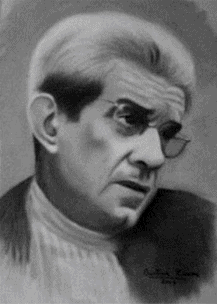
１９２６年頃、ラカンは「シュルレアリスム運動」 に影響を受けているという所が重要であり、精神医学を専攻していたこの頃のラカンは、当時のフランスで起きていたシュルレアリスム運動に興味を持つようになり、そこで動くようになったりする。
１９３２年になり、ラカンは「エメ」と呼ばれる女性を主題にしたパラノイア（神経症）に関する論文を発表する。これは、今後のラカンの精神分析の方向性を表しているものにもなっている。それから、これまでもフロイトにいくらか関心を持っていたラカンだが、ラカンが本格的にフロイトに取りかかるのは、恐らくこの頃あたりかららしい。
１９３６年に、マリエンバードの精神分析学会という所で、独自の理論である「鏡像段階論」 を発表する。これが、ラカンが初めて分析家として姿を現した時であったらしい。この「鏡像段階論」は、ラカンの精神分析の中核をなす理論である。
そこから、ラカンは分析家として色々と活動を続け、「パリ精神分析協会」に所属するようになったり、会長に選ばれるようになったりするが、そこで内紛が生じて分裂するようになったりする。
１９５１年から、ラカンは「セミネール」 と呼ばれるセミナーを開くようになり、そこで独自の理論を語るようになった。
そして、パリ精神分析協会から離れるようになったラカンは、１９６４年に「パリ・フロイト派」 を立ち上げる。ここから、精神分析家として独立した立場で動くようになる。
以上の中で、ラカンがやっていたこととして有名なのは『短時間セッション』 と呼ばれるものだった。これは、通常は55 分ぐらいあるセッション時間を、分析家のペースで短く縮めるというものだった。これは、決して「手抜き」でやっていた行為ではなく、ラカン的には自身の理論とも整合しているが故に行っていたことであり、自身の「時間」に対する考え方にもとづくものだった（これは、後ほど詳しく説明する）。しかし、ラカンのこの行為は「パリ精神分析学会」でも物議がかもされていた。
それから、ラカンはフロイトの娘である「アンナ・フロイト」が創始した「自我心理学」について批判していた。この「自我心理学」は、フロイトの言う「抑圧されるもの」ではなく、「抑圧するもの」に着目するという趣旨のものだった。父親であるジークムント・フロイトが訴えていた「無意識」よりも、どちらかというと「意識」に重点を置くこうした風潮は、フロイトを正しく継承していないとし、「フロイトに還れ」 というようなことを、ラカンは主張していたわけである。
このようなことをしていたラカンは、破天荒なことを色々とやっていた様子であり、批判されることも多かったみたいだが、ラカンが今でも人気なのは、その反骨精神によるものかもしれない。
ラカンの代表的な書物としては、論文の集積である『エクリ』 が挙げられる。しかし、ラカンは書物を書くことをあまりしなかったため、『エクリ』のように本として出版されたものがほとんど無かったらしい。（しかし、この『エクリ』があまりに難解であることが、ラカンが難しさをさらに際立たせている。） それから、セミネールの内容をまとめた講義録として『精神分析の四つの基本概念』 が挙げられる。
ラカンについては、他にも色々とスキャンダルがありそうであり、それを取り上げると色々と言えることがあるかもしれないが、ひとまず、これくらいにしておこうと思う。
・「人間は人間でないものを知っている」
まず、ラカンの主張がよくまとめられている言葉を紹介していきたい。
ラカンは「短時間セッション」という斬新なことをしていたわけであるが、これは、「時間」と「人間の自我の形成」とが関わりのあるものとして、ラカンは考えていたからである。ラカンは、人間の自我の形成（これは言い換えるならば「自己規定」とも言われる。）について、以下のように３段階に分けて要約した。
（※書籍『ラカンの精神分析 (講談社現代新書)』より引用）

・人間は人間でないものを知っている。
・人間たちは人間たちであるために互いの間に自分を認める。
・私は人間たちによって人間でないと証明されるのを恐れながら、自分は人間であると断言する。
以上の要約は、「短時間セッションの論理的裏付け」 として挙げられた、自己規定のプロセスなのであるが、論理的裏付けがどうこうというより、なかなかインパクトのある台詞だと思う。
「人間の自我」と「時間」と「短時間セッション」の関係について、詳しくは後述するが、ラカンの理論は、はじめから「人間でないもの」を想定しているような所があり、そこから、「自己」と「他者」との関わり合いの中で、「人間らしいもの」が生まれてくるという内容になっている。
「人間でないもの」というと、ユングなんかも、心理学にオカルトや神話を持ち込んだ人物として有名であるが、ラカンもまた、精神分析家としての立場から、「人間でないもの」について言及していた人物だと言うことができる。
・ラカンの読み方について
さて、次に、自分なりの「ラカンの読み方」について述べていくが、ラカンは、ひとまず「分かる所」から理解した方が良い と思う。ラカンをしっかりと理解していくためには、しっかりとした「実感」をともないながら理解していった方が良いが、こうしたことは、分かる所からでも着実にやっていった方が良い。（ちなみに、これはヌーソロジーにも言えることであり、自分がヌーソロジーを修得するにおいて身につけた学習法でもある。）
あとは、これはヌーソロジーとの絡みの話にもなるが、難しい理論に挑む時は、理解するのに意識の「反転」が必要な所 は用心した方が良い。こうした理論には「感覚的に解かる必要のあるポイント」というのがあり、そこは、哲学や心理学の領域というよりは、「センス」が必要になってくる領域になる。大げさに言うと、理解に挑む前に「禊（みそぎ）」をするなり、「精神統一」をするなり、十分な心構えをするなり、体調を整えて望むなり・・・と、妙な話になってくるが、抽象的なことを理解するというのは、実際にそういうのが必要な話になってくるので、あなどれないことなのである。
ラカンの難所を理解する難しさは、ヌーソロジーにおいて『等化』を理解する難しさにも通じている。従って、ポイントが掴めないと難しいが、ポイントが整理できると分かりやすくなるような気がする。そして、「センス」が必要な所を押さえたら、あとはセンスで何とかするしかない・・・という側面もあると思う。
筆者によるラカンの説明では、「分からない所」はいまだ取り置き状態であり、ラカンの理論の全てを網羅できているわけではないため、それについてはご了承願いたい。
しかし、本書の内容でも、多くのことを理解できるようになると思う。
・ラカンの難しい所
ラカンの原書に『エクリ』というのがある。しかし、ラカンによると、これは「読む人のことを想定していない」書物であるらしい。従って、この本はラカンを理解するためのテキストとして相応しいわけではないという所が、さらにラカンを難しくしている。
そこで、講義録として有名な『精神分析の四基本概念』 というのがある。これは、ラカンが精神分析協会を破門された後に行った講義の記録であり、ラカン本人が語ったものの中でも読みやすい方らしい。
・・・というわけで、筆者もすべて目を通したわけだが、しかし、それでもやっぱり難しい。
『精神分析の四基本概念』に書かれているラカンの講義の内容を見てみると、精神分析の現場においては、患者の欲望の中に「語ることができないもの」というのがあることが分かってくるという。
これは、哲学の世界でもよくあったことで、プラトンの「イデア」であったり、カントの「モノ自体」であったりと、「語ることができないもの」に該当する概念は、思想や哲学の世界ではよくつきまとっており、「刑而上学」という人間の感覚や経験を超えた真実を追い求めるものとして、あれやこれやと言われていることである。
ラカンが言っていた先ほどの講義の内容は、その「語ることができないもの」である「ナニカ」は、「語る」と「言語」になり、「言語」は聞き取られることで、聞き手の「想像」や「イメージ」となり、その「想像」から本来の意味合いから離れてしまうという・・・つまり、「語ってしまうと、その本性から離れてしまう」というようなことを、何度も何度も何度も何度も言っているような印象であった。
このような聞き苦しさがある所も、ラカンが難しい理由の一つだと思う。
・西洋の外から見るラカン
このようなラカンの言っていることは、ヌーソロジー的に捉えてみると、やはり「反転」 が分からないと難しいものなのだと思う。しかし、逆に考えると、もしかすると「反転」が分かれば簡単なのでは？ という気もしてきた。
ラカンのいたフランスは、「西洋」という諸国に含まれる国であり、東洋の良き文化があまりない場所である。
例えば、東洋の「仏教」にある「禅」 の思想などは、意識の「反転」に適したものを含んでいるため、実はラカンを理解するための助けになるという長所がある。
それから、東洋にある「妖怪」 という発想が、実は精神分析において大事だったりする。「妖怪」の出所というのは、元々は「現象そのもの」であり、民俗学的に「妖怪」という存在は非常に奥が深かったりする。「人間にとってわけの分からないもの」は、「悪いもの」のように扱うのではなく、まずは「妖怪」のような「現象」として捉えてみることが大事である。このような「現象」のありのままを追いかけることは、ラカンの言う『現実界』を捉えるにおいても、必要な姿勢である。（『現実界』については、後ほど詳しく説明する。）
しかし、西洋諸国は「禅」や「妖怪」といった考え方があまり無いものであり、「キリスト教」といった価値観が主流であるため、西洋では何か得体の知れないものを探求する場合は、「それは悪魔である」という価値観に惑わされてしまうことになる。従って、それのありのままの本性を追い求めるとなると、必然的に難しい環境の中で足掻いていくことになる。フロイトが「性」の問題についてこだわらざるをえなかったのは、当時の西洋には「人間の無意識」に結びつきやすい文化が、そもそも少なかったため、「抑圧された性」という道に行き着きやすかったのだと思う。
ただ、以上のような「キリスト教的な風潮」の例外として起きていたのが、フランスの「シュルレアリスム運動」であり、ラカンがシュルレアリスム運動を支持した理由は、そこに「妖怪」めいた思想があったからだと思う。
さて、以上のような特徴を持つラカンの精神分析学であるが、本書ではラカンの理論とヌーソロジーの理論とを結びつけていこうと思う。そうすることによって、ヌーソロジーを上手く理解するコツが掴めれば、それと繋がりのあるラカンも理解できるのではないか？と思う。
それから、ヌーソロジーもまた、難しいと評判のものであるが、上手く理解すれば汎用性が広く、色々な分野に繋げることができるという展望のあるものである。従って、ラカンの理論をヌーソロジーと繋げることで、他のあらゆる分野に繋げることも可能である。そのようにして、他の分野の理解が深まる所にまで発展していくと良いと思う。
・推奨文献
さて、ラカンを理解するために、筆者がオススメできる文献をいくつか紹介していこうと思う。
まず、図付きで楽しめるものとして『ラカン (FOR BEGINNERSシリーズ)』 というものが良かった。これを読んですべてを理解できるかどうかは分からないにしても、ラカンの雰囲気を味わうのに良いのではないか？と思う。
それから、精神科医の「斎藤環」 という人が書いた『生き延びるためのラカン』 は割と評判が良い。タイトルの通り、少し社会的な生活と関わりのある所？を重視していて、語り口調で書かれており、かなり癖のある雰囲気であるが、興味があれば読んでみると良いと思う。
ラカンについてしっかりとした内容を押さえたい場合は、『ラカンの精神分析 (講談社現代新書) 』 といったものがある。また、『ラカン入門 (ちくま学芸文庫) 』 なんかは、ラカン心理学の前期・中期・後期と分けて、さらに色々と書いてある、詳しい所を知りたい場合は、そうした本を読むと良いと思う。
筆者の知ってる限りでは、ラカンのオススメ本は以上である。
■ラカン心理学の内容（鏡像段階論とＲＳＩ）
ここから、ラカンの言っていた心理学の内容について述べていくことにする。まずは基本として押さえやすい「鏡像段階論」 を初めとして、「象徴界」「想像界」「現実界」 という三つの概念について説明していく。それから、ヌーソロジー的にはそれらは何に対応しているのかについても、同様に説明していく。
・「鏡像段階論」について
まず、ラカンの心理学のスタートであり、「基本」となっているのは『鏡像段階論』 である。この「鏡像段階論」とは何か？について、順を追って説明していこうと思う。
人間は、幼児の段階においては「自分が自分である」という感覚を持っていない。ただ単純に「目の前に光景がある」というのを認識しているだけで、我々が一般的に見ているように「立体物で構成された世界」という風には見えていない。
それから、自分の「身体」に関してもバラバラに認識しているにすぎず、目の前に見えている光景と、自分の持っている感覚に繋がりを見出し、「自分は身体を持っている人間である」という認識を持つには至っていない。
そこで、成長するにつれて段々と「他者からの視線」があるというのを意識するようになり、「他者にとっての自分」というのがあることに気付くようになる。その時、「他者からこう見られているであろう自分」というイメージから、「自分の身体像」というのを形成していくようになる。その身体像は、「鏡に映った自分」のように「客観」的な姿から作られているとも言えるので、「鏡像」 だと言うことができる。そして、「人間の自我」はこの「鏡像」をベースに作られている ということを言っているのが、ラカンの「鏡像段階論」である。
「鏡像段階論」において「自分がこう見られているであろう」というイメージから、自身の「自我」が出来上がるということであるが、この自我は『想像的自我』 と呼ばれている。
人間の自我は「鏡像」という、「他者からの視線」によってできたもの に基盤を持つというのが、まず、ラカンの理論において重要なポイントである。
ヌーソロジー的には？
さて、「ヌーソロジー」は、半田広宣さんによって、「宇宙論」だとか「具体的イデア論」という風に言われているが、実は、「自己」と「他者」の関係性によって出来る「自他論」 でもあるということを、半田広宣さんは言っている。ラカンの「鏡像段階論」のように、「自己」と「他者」の関係から生まれる精神構造 というのは、むしろ、ヌーソロジーの真骨頂とも言える所なのである。
まず、「鏡像段階論」においては、「見られている」という意識によって、自分が形成される という所が重要である。ヌーソロジー的には、「見られている」という意識の場には「客体」 というものが存在している。そして、それとラカンの話をすり合わせると、この「客体」をベースにして、「想像的自我」 が生まれていると言うことができる。
それから、「客体」はヌーソロジーの観察子でいうと、『次元観察子ψ ４』に対応している。これは、ヌーソロジーの実践において、スタートの方で出てくる概念である。
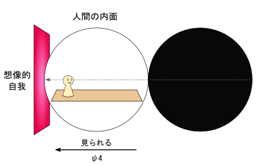
このように、ヌーソロジーにおける人間の自我形成では、まず、「見られている」という意識と『次元観察子ψ ４』に対応する「客体」が出てくる のである。
そして、あくまでこれは、自我形成のスタートの部分であり、人間の自我は、そこから発展してさらに完成に向かっていくようになる。ヌーソロジーにおける自我形成の仕組みについては、詳しくは、本書にある『人間の自我構造の発展』 の節で述べていくことにする。
・「エス」と「主体」について
次に「エス」 と「主体」 について述べておこうと思う。
「エス」は、『ユング精神分析編』の『フロイトについて軽く』 の節の所でも説明したが、フロイトが言っていたものであり、「無意識にあるもの」である。
次いで、「主体」という言葉も、「欲動の主体」といったように、フロイトが用いていた言葉であるが、ラカンはこれをさらに積極的に使っている。ラカンの扱う「主体」は、「エス」とほぼ同義であるとして捉えても良い。
ここで、ラカンの扱う「主体」とは、簡単に言うと、「想像的自我」とは違う、自分の「本性」のようなもの である。
つまり、「エス」と「主体」は、「鏡像段階論」における「鏡像」とは対称的に、「無意識にあるもの」 に該当する。
ヌーソロジー的には？
「主体」という言葉はヌーソロジーでもよく使われている。
ヌーソロジー的には、『次元観察子ψ ３』に「主体」があるというように言われているが、ここで言う「主体」と、ラカンの「主体」とは、ほとんど一緒のものと解釈しても良い。
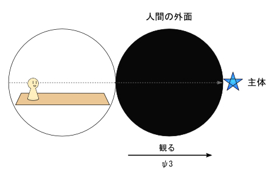
それから、「エス」は、『フロイトについて軽く』の章でも説明したが、無意識という場にあるものであり、ヌーソロジー的には『人間の外面』から始まる場所にある。
・「想像界」と「象徴界」について
ラカンの心理学を理解する上で、「鏡像段階論」の次は、『想像界』 と『象徴界』 の理解に発展させると良く、この二つは、対称性を持つものとして、セットで捉えておくと良い。
先ほど述べた「鏡像段階論」において、人間は「他者からの視線」から出来た「鏡像」を元にして「想像的自我」という自我をイメージする。そして、そこで「想像」が行われるわけであるが、このイメージのある場が『想像界』 である。
次いで、『象徴界』は、「名」や「言葉」のある場であり、それらのネットワークが作る場 である。ラカンにおいては、「名」という概念と「イメージ」という概念が対を成すように重要な概念となっているため、「象徴： 名」というワードと「想像： イメージ」というワードをセットで押さえておくと良い。純粋な「名」や「言葉」というものは、「イメージ」で形成されている場にはない。ここは重要なポイントである。
（このことについては、『「シニフィエ（名）」と「シニフィアン（イメージ）」』 の項目にて、詳しく述べる。）
「想像界」は、「想像的自我」が形成される場 だと、先ほど説明したが、一方で、「象徴界」は「主体」が寄り添っている場 となっている。「主体」の持つ純粋な「名」は、「象徴界」にあるという所も、重要なポイントである。
この「想像界」と「象徴界」については、『「シェーマＬ」について』 の項目の所でも再度出てくるため、後ほどまた説明する。
ヌーソロジー的には？
「想像界」と「象徴界」は、ヌーソロジー的には何と関連しているかというと、人間の意識に近い所から述べると、それぞれ『次元観察子ψ ４』と『次元観察子ψ ３』に関係している。
同様に、それぞれ『人間の内面』と『人間の外面』に、「想像界」と「象徴界」の概念が紐付いているが、それは、それぞれ「入り口」と解釈した方が良い。つまり、『人間の内面』は「想像界の入り口」 であり、『人間の外面』は「象徴界の入り口」 ということになる。
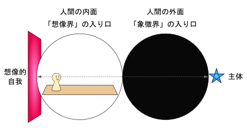
しかし、「想像界」と「象徴界」は、より深い所へ踏み込んでいくと、『次元観察子ψ １０』 と『次元観察子ψ ９』 に対応している。ψ １０とψ ９は、それぞれ『人間の感性』と『人間の思形』と呼ばれるものである。ヌーソロジー的にも『人間の感性』には「イメージ」があり、『人間の思形』には「言語」があるため、そのあたりの整合性も取れるようになる。
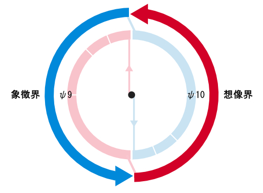
それから、『次元観察子ψ ９』は、『凝縮化』によって『次元観察子ψ *３』になる構造を持ち、『次元観察子ψ １０』は、『凝縮化』によって『次元観察子ψ *４』になる構造を持つ。
そこで、「ψ ９→ψ *３→ψ ４」と伝わって発展したり、「ψ １０→ψ *４→ψ ３」と伝わって発展したりする構造も持っており、そのあたりの発展構造についても、ラカンの心理学から読み取ることができる。（これについては『「シニフィアン（名）」と「シニフィエ（イメージ）」』 の項目にて詳しく述べる。）
・数列を使った象徴界の例え話
ラカンの「象徴界」と「想像界」の説明として、数列を用いて例えてみると分かりやすいので、それを使って説明してみようと思う。
例えば、以下のような数列があったとしよう。
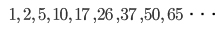
以上は、簡単な「階差数列」であり、数列になってる数の値と値の差に、また「１，３，５，７・・・」という規則性を持っている数列である。数列における「一般項」と合わせると以下のようになる。（一般項のｎに数値を入れると、数列のｎ番目の数字になる。）
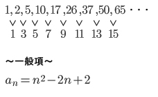
この数列を用いた比喩として説明できることは、この中で、数列の「規則性」の部分にあたるのが「象徴界」 であり、一つ一つの数字とそこから沸き上がるイメージが「想像界」 にあたる・・・ということである。
簡単な数学であるが、数列が持っているそれぞれの数字の値は、この数列自体が持っている「規則性」からできあがるという所は、重要なポイントである。そして、この「規則性」があるのが「象徴界」であり、そこは想像的なイメージといったものが何もない所である。
それから、それぞれの数字から沸き上がるイメージが「想像界」という話である。先ほど挙げた例では、数列の値として使われているものは「数字」であるが、実際問題、人間が言語を使う場合は、連鎖する「名前」がそこに表れている。人間は「名前」を見ると、そこから好きなようにイメージを膨らませることができたり、各自の自由な印象で受け止めることができるが、そうしたイメージの世界が「想像界」である。
以上が「象徴界」と「想像界」における、数列を使った例え話である。理解する上での参考になっただろうか？
・「現実界」について
「象徴界」と「想像界」に加えて、『現実界』 もまた、ラカンの提唱した重要概念であり、「現実界」・「象徴界」・「想像界」の三つ は、『ＲＳＩ』 と呼ばれるモデルとしてセットになっている。
ラカンの言う「現実界」とは、「ありふれた現実」のようなものとは違う意味である。ラカン的には、一般的な「現実」はむしろ「想像界」で出来ているものであるため、「現実界」は、どちらかというと、「想像界」からは見ることができない「本当の現実」のようなもののことを意味する。
この「現実界」は、ポジション的には「象徴界」にもいくらか近いものであるが、「象徴界」には、あくまで「身体」というものがない。従って、「現実界」とは、『ＲＳＩ』における「想像界」以外で、「身体」がある場 だと言うことができる。
ラカン的には、「主体」の本体は「現実界」にある・・・と言われている。つまり、「主体の本体」が「現実界」 にあり、「主体」の持つ「名」が「象徴界」 にある・・・という風に理解しておくと良い。
ヌーソロジーにおいて？
ラカンの「現実界」を理解することの難しさは、大体、ヌーソロジーで『等化』を理解することの難しさであったり、『人間の外面』を理解する難しさにも通じている。先ほども述べたことであるが、これは、意識の「反転」 をしないと、理解できないものなのである。（それから、「象徴界」を正確に理解することも同様に、「反転」が必要な所である。）
ヌーソロジー的には「現実界」は何に対応するのだろうか？ 恐らく、身近な所で言うと、『次元観察ψ ３〜ψ ４』が見えるようになり、『位置の交換』が起きたときに知覚できる世界が「現実界」の入り口 にあたると思う。これは、意識の「反転」が起きつつも、その時の「身体」が感じている世界 である。
また、『位置の交換』が分かったその時に感じる「現実界」は、あくまで「一瞬」のものに過ぎないのだと思う。それぞれ、「想像界」が『次元観察子ψ １０』、「象徴界」が『次元観察子ψ ９』に対応しているように、「現実界」はその双方に関係していると思われる。より深い話になってくると、「現実界」は、『次元観察子ψ ９〜ψ １０』の双方が分かった時に、より深く入り込むことができる。
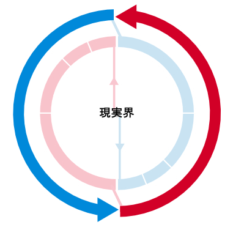
・映画「マトリックス」の比喩
以上の「想像界」と「象徴界」と「現実界」については、１９９９年に大ヒットした映画『マトリックス』 の世界観を使った、精神科医の「斎藤環」という人による比喩がわかりやすい（これは、書籍『生き延びるためのラカン』に書かれている）。
従って、映画『マトリックス』の内容を観つつも、それと照らし合わせて覚えておくと良いと思う。
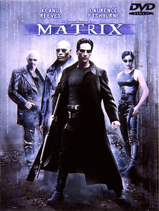
想像界：
仮想世界マトリックス
象徴界：
マトリックス上のソースコード
現実界：
マトリックスから目覚めた現実世界
■ラカン心理学の内容（名とイメージの関係とシェーマＬ）
・「シニフィアン（名）」と「シニフィエ（イメージ）」
次は、『シニフィアン』 と『シニフィエ』 という概念についてである。これは、ラカンの提唱した用語というよりも、「ソシュール」という言語哲学者によって定義されたものである。しかし、ラカンの心理学においてよく出てくるため、ほとんどラカンが提唱したように思えるぐらい、ラカンによって使いこなされている上に、これもほとんどラカンの精神分析の中核として組み込まれている概念である。
「シニフィアン」は簡単に言うと「記号表現」 、「シニフィエ」は簡単に言うと「記号内容」 だと説明されている。・・・しかし、この二つは、他にも言い換えて説明することが色々と出来るものでもある。二つの意味をそれぞれまとめると、以下のようになる。
〜シニフィアン〜
記号表現、能記、象徴、名
例： 「海」という文字や、「うみ」という音声
〜シニフィエ〜
記号内容、所記、概念、イメージ
例： 海のイメージや、海という概念、ないしその意味内容
それぞれ以上のような意味であるが、ここでは分かりやすいように「シニフィアン」＝「名」 と「シニフィエ」＝「イメージ」 という言い換えを採用することにする。
ここで、「シニフィアン」は「単一の名」を意味していて、「シニフィエ」は「単一のイメージ」を意味している。そして、「シニフィアン（名）」が連鎖している世界が「象徴界」 であり、「シニフィエ（イメージ）」が交わり合って膨らんでいる世界が「想像界」 でる。
ここで、ラカン的には、「シニフィアン（名）」は「現実界」と絡めて考えられる こともあるため、「普通に認識できるもの」ではない ことを押さえておいてもらいたい。「シニフィアン」とは、あくまで純粋な「名」であり、「文字」として表記されている「名」を、無心で見たときのものが「シニフィアン」である。あるいは、イメージを抜きにした純粋な「音」として聞こえるものが「シニフィアン」である。
「シニフィアン（名）」を認識する時は、少しでもイメージが発生すると、「シニフィエ（イメージ）」に落とし込まれてしまうため、注意が必要なのである。
ヌーソロジー的には？
「シニフィアン（名）」と「シニフィエ（イメージ）」は、ヌーソロジー的には何と関係しているだろうか？
「単一の名」である「シニフィアン」は、ヌーソロジー的には、『次元観察子ψ ３』や「主体」に付随 している。同様に、「単一のイメージ」である「シニフィエ」は、ヌーソロジー的には、『次元観察子ψ ４』や「客体」に付随 している・・・と解釈することができる。
ここで、「シニフィアン」を知覚するためには、意識の「反転」が必要になる ことも分かってくる。それを理解するためには、まず、「視覚平面」が見えている必要がある。
「視覚平面」を理解するためのものとして、「エルンスト・マッハ」の以下の図がある。
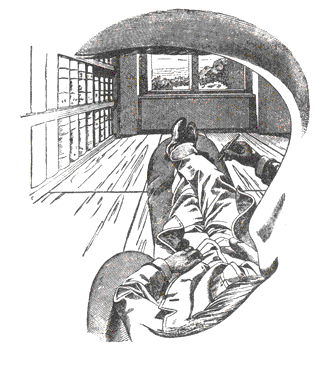
筆者によるヌーソロジーの説明、『Raimuのヌーソロジー入門』や『ヌーソロジー基本概要＋（プラス）』などでは、この図がたびたび出てくるが、これはマッハ本人が右目から「見えているまま」を描いた絵である。この時に見える景色は、「平面」として見ることができるということを、この図は訴えている。
ヌーソロジー的には、意識を「反転」させ、『人間の外面』が分かるようになると、目の前の景色が「視覚平面」として見えてくるようにもなる。これは、目の前にある景色の「あるがまま」が見えるようになった結果である。
そして、これを見た時のように、「見えたまま」の「名」や、「聞こえたまま」の「名」が、ラカンの言いたい「シニフィアン」である ということを理解してもらいたい。それから、「主体」もまた、こうした「名」を持っているものである。
また、オコツト情報によると「『次元観察子ψ ３』とは、あなたがた一つのモノに対して与えている言葉の集合に相当します。つまりモノを認識する、もしくは指し示すときに作り出される名という言い方ができるでしょう。」 と言われている。ここにも、「象徴界」と『次元観察子ψ ３』が関係していることの裏付けがある。
「自己」と「他者」の関係においては、こうした「名」が「他者」から受け取られると、「シニフィエ」という「イメージ」へと還元されるようになる。それは、ヌーソロジー的には「ψ *３（他者の名）→ψ ４（自分のイメージ）」 になるという構造を意味している。逆に、「自己」から「他者」へとこちらが話す場合は、「ψ ３（主体の名）→ψ *４（他人のイメージ）」 という構造になる。そこも重要な所である。
・シェーマＬについて
『シェーマＬ』 もまた、ラカンの理論における中心概念である。これは『Ｌ図』 とも呼ばれている。
『シェーマＬ』は、以下のような図で表されている。
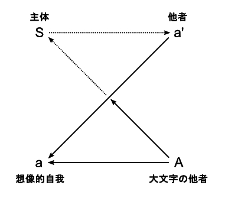
ここで、「主体（エス）」 と「大文字の他者」 と「他者」 と「想像的自我」 という用語が出てきている。まず、これについてそれぞれ説明していこうと思う。
まず、左上の「主体」はフロイトの言った「エス（Ｓ）」のことを言っている。ラカンの扱う「主体」はさきほども説明したが、「自分の本性」のようなものであり、幼児が「想像的自我」を形成する前からすでに持っていた、原始的なものに該当する。
次に、右下の「大文字の他者」 は、簡単に言うと「他者の主体」と捉えてもらうと良い。こちらも、原始的なものとしての「他者」という意味である。
次に、左下の「想像的自我」 は、先ほども説明したが、「鏡像段階論」の課程を経て、「他者の視線」によって出来上がる「自我」である。
最後に、右上の「他者」 は、単純に言うと「他者の想像的自我」と捉えてもらって良い。これは割と簡単な話であり、「自分から見える他人の人物像」のことを言っている。試しに、何か知り合いの姿を思い浮かべてもらえば良いが、その「見える他者」が、ここでいう「他者」である。これは「小文字の他者」 と呼ばれることもある。
ラカンの「シェーマＬ」で起きる流れとしては、まず、原始的な「主体」が、この世界に産み落とされることになる。そこで、「主体」は初めに「他者の語らい」を受けることになる。その時、「主体」はそこから周りにいる他者の人物像まではイマイチ把握することはできないが、それでも、何か「他者がいる」ということだけは、受動的に知覚している。ここで漠然と捉える他者を「大文字の他者」と言う。
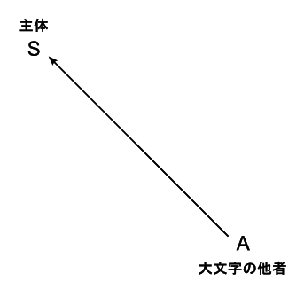
次に「大文字の他者」から、だんだんと「人物像」が見えてくるようになる。そこで、「人物像」として見えてきた「他者」からの「視線」を感じるようになってくる。そして、それは自分と同じ姿をしているというのが、だんだんと分かってくるようになる。この時、「他者」は、自身の「鏡像」を作り出すものとして機能するようになる。そして、その「鏡像」から、自分自身の「人物像」と、「想像的自我」が形成されるようになる。
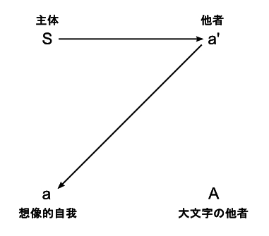
以上、「Ａ→Ｓ→'ａ→ａ」の流れが、「シェーマＬ」において出てくる一つの流れである。
「シェーマＬ」の話はここから続きがあるが、ここで一旦、区切ることにする。
ヌーソロジー的には？
ヌーソロジー的には、「シェーマＬ」は、以下のように、『次元観察子』がピッタリと当てはまるようになっている。
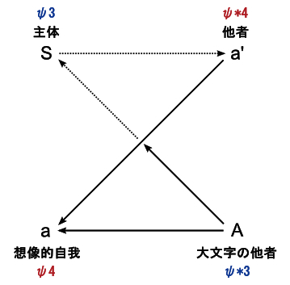
ヌーソロジー的には、『次元観察子ψ ３』には「主体」が、『次元観察子ψ ４』には「客体」があるが、「シェーマＬ」における「主体」と「想像的自我」は、そこにそれぞれ当てはまるようになるわけである。
対して、「大文字の他者」は「他者の主体」であり、普通の「他者」は「他者の客体」だと言うことができる。
それから、もしかすると、ラカンの「シェーマＬ」はもっと高いレベルで捉えることもできるかもしれない。その時は、ψ ３→ψ ５が対応し、ψ ４→ψ ６が対応するようになる。しかし、人間の自我形成において、「見る」と「見られる」の関係によって、まず一番初めに形成されるものは「ψ ３〜ψ ４」であるため、ここでは、人間にとって身近な所にあるものとして、『次元観察子ψ ３〜ψ ４』で解釈するのが良いと思う。
・シェーマＬにある二つの線
以上で説明した「シェーマＬ」には二つの重要な線がある。それは、「Ｓ（主体）とＡ（大文字の他者）」を繋ぐ線 と、「ａ（自我）と'ａ（他者）」を繋ぐ線 である。
まず、精神分析においてラカンが理想とするのは、「Ｓ（主体）とＡ（大文字の他者）」のコミュニケーションが成立すること である。そこに、ラカンが言う「主体」同士の関係があり、それぞれが本来持つ「欲望」を解消するコミュニケーションがある。このコミュニケーションは、純粋な「名」から構成される言葉のメッセージが伝わった際に上手くいくことでもあり、「象徴的関係」 とも言われる。
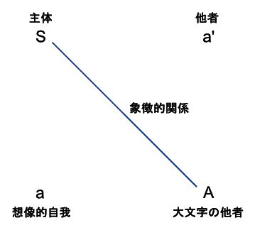
しかし、人間同士のメッセージ交換においては、その関係は、「ａ（自我）と'ａ（他者）」の線において阻害されるようになる。純粋な「名」から構成される言葉は、他者によって受け取られることで、「想像的なもの」として捉えられることになる。そこで、「Ｓ（主体）とＡ（大文字の他者）」の関係は打ち切られてしまう。この関係は双方の「イメージ」によって作られる関係でもあり、「想像的関係」 とも言われる。
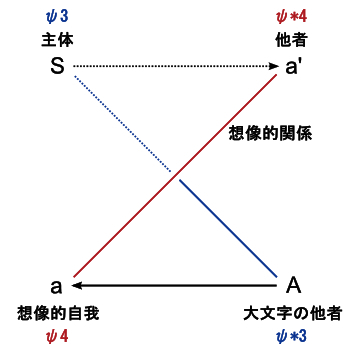
ラカンが目指す所は、いかにして、「想像的関係」による阻害を避けて、無意識にある「主体」を明らかにして、Ｓ（主体）とＡ（大文字の他者）とのコミュニケーションを成立させるか・・・という所である。
ヌーソロジー的には？
「シェーマＬ」とヌーソロジーの概念との対応については、先ほども述べたことだが、ここで新しく出てくるのは、「象徴的関係」と「想像的関係」である。
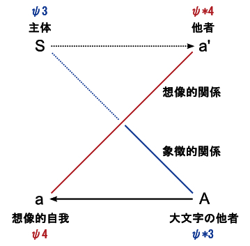
ここで、「象徴的関係」は、ψ ３とψ *３にあたるもの を繋いでおり、「想像的関係」は、ψ ４とψ *４にあたるもの を繋いでいる。そして、それぞれのネットワークを作り上げるものとして、「象徴的関係」に対応するものは『次元観察子ψ ９（人間の思形）』 にあり、「想像的関係」に対応するものは『次元観察子ψ １０（人間の感性）』 にある。これは、「象徴界」が『次元観察子ψ ９』に対応し、「想像界」が『次元観察子ψ １０』に対応することにもリンクしている。
従って、「象徴的関係」と「想像的関係」の二つは、ヌーソロジー的には、『次元観察子ψ ９』と『次元観察子ψ １０』の関係にも当てはまると言うことができる。
・言語を「作る」世界と、言語を「使う」世界
これまで、「シニフィエ」と「シニフィアン」の関係や、「象徴的関係」と「想像的関係」の関係について述べてきた。
以上のラカンの理論から言えることは、「名」から派生した「言語」によるやり取りをしていくと、ラカンの言うＳ（主体）とＡ（大文字の他者）の関係は断ち切られ、抑圧されてしまう ・・・ということである。
しかし、これは「言語」が直接「主体」の阻害をもたらすというわけではない。「言語」が「イメージとして使われる」という作用を起こすことによって、「主体」が阻害されていくということである。
ここはややこしい所なので、しっかりと分かって欲しい所であるが、「言語の世界」と単純に言った場合には、「言語を作る世界」 と、「言語を使う世界」がある ということに注意して欲しい。
「作る世界」における言語 は、「象徴界」的なもの であり、そこには「名」があるわけだが、どちらかというと、「名」を作る「システム」や「仕組み」がメインとなってる世界である。
逆に、「使う世界」における「言語」 は、「想像界」的なもの であり、それは「名」や「言語」から派生した「イメージ」がメインとなっている世界である。先ほども説明した通り、「主体」の阻害を起こすのは、このような「想像界」的な関係なのである。
ラカンの精神分析学の書籍の中には、「象徴界に参入する」といったことを言われることがあるが、これは、「言語を使う世界」側に埋没するということではなく、「言語を作る世界」側に参入する ということである。その点について、注意してもらいたい。
ヌーソロジー的には？
ヌーソロジー的には、ここでいう「言語を使う世界」にあたるのが、『人間の内面』 に該当する。それは、「イメージ」がメインになって構成されており、そこでは「主体」が無意識に抑圧されるようになる。それから、そうした「想像界」の本体は、『次元観察子ψ １０（人間の感性）』にある。
一方で、言語を「作る」世界は『次元観察子ψ ９（人間の思形）』 に該当する。これが「象徴界」の本体である。ヌーソロジーにおいて、『人間の外面』にある「名」がその片鱗として出てくるが、そうした「名」同士を紡いだ「言語」を作り上げるネットワークの世界が「象徴界」というわけである。
・ラカンの精神分析が目指すもの
ここまで、ラカンの言った理論を説明してきたが、以上のことから、この中でラカンが言いたいことの中核になるのは何なのだろうか？ これを、ラカンの講義録である『精神分析の四基本概念』の内容を踏まえて述べておきたい。
詰まるところ、ラカンが言いたいことは、「シニフィアン（名）」が発された時、それは「シニフィエ（イメージ）」に落とし込まれてしまう。そして、そうした「シニフィアン（名）」と「シニフィエ（イメージ）」の仕組みによって、無意識にある「主体」の語らいが、「想像的関係」によって阻害されてしまうことが同様に起きてしまう。これは、患者の持つ真の「欲望」についても同じことが言える。従って、患者の真の「欲望」は、語らいの現場に表れた段階でその本性との差異を持ってしまう・・・。ラカンは『精神分析の四基本概念』において、そのようなことを、何度も何度も何度も何度も言っていた様子であった。
そうした中で、ラカンは「分析家の欲望は絶対的差異を得ようとする欲望」 と言っており、純粋な「シニフィアン（名）」の位置にある「主体」を明らかにした時、そこから表象として出てくる「シニフィエ（イメージ）」との差異が分かってくるようになるが、そうした「絶対的差異」を明らかにすることを目指していた。
色々と回りくどい言い方をして、様々なことを説明していたラカンだが、ラカンの言いたいことの中核にあるのは、以上の「シニフィアン（名）」と「シニフィエ（イメージ）」の関係と、そこから繋がる「主体」と「想像的関係」による阻害の所なのではないか？と思う。
そして、そうした中で「主体」をどのようにして明らかにするか・・・それをヌーソロジー的に言うのであれば、やはり、そこで「反転」 という発想が必要になってくるのである。ラカンは、「メビウスの輪」 や「クラインの壷」 のような、表裏一体の構造を持つものを好んでいたが、それは、ヌーソロジー的にも「反転」に通じる構造だからだと思う。
それから、ラカンが好んだ「シュルレアリスム運動」で表現される世界というものは、人間が持つ「物質的なイメージ」という、「想像的なもの」から解放する力を持っている。これは、人間が夜に見る「夢」と同じ方向性を持っていると言っても良い。従って、ラカンがそうしたものに目をつけたのは、自然の理に適っていたというわけである。
ラカンの理論では、「主体」が語らいをしてコミュニケーションをとろうとすると、そこで「主体の語らい」と「想像的なもの」との差異が生じてしまう・・・もちろん、こうした「差異」が発生しないようにコミュニケーションをとることも、やろうと思えば可能であると思うが・・・
ラカンが言ったことは、人間同士の言語コミュニケーションがいい加減になった場合に、特に言えることだろうと思う。ビジネスや宗教における話であったり、コミュニケーションの仕方が保守的になったりすると、そうした問題が顕著になってくる。それから、ラカンのこうした主張は、精神分析家が保守的なコミュニケーションを取った際に起きる問題についての言及でもあるのだと思う。
何にせよ、ラカンの精神分析においては、いかにして、こうした「差異」が発生しないコミュニケーションを行うか、あるいは、「差異」に気付けるコミュニケーションを行うかが、課題となってくる。
■ラカン心理学と「時間」について
ラカンは、精神分析における「時間」 の問題についても述べている。それは、「主体」や「想像的自我」といったものと、「時間」との関係についてでもある。
そもそも、ラカンが、周りが反対するのを押し切ってまで『短時間セッション』という試みを行っていたのは、ラカンは「時間」について特有の考え方を持っていたからである。精神分析において、分析家自身が時間を「区切る」ということは、ラカンにとって重要な行為を意味していたのである。
ここで、ラカンによる「時間」の考え方について説明していくが、これについては、まず『三人の囚人の寓話』について説明していく必要がある。
・「三人の囚人の寓話」について
『三人の囚人の寓話』 は、精神分析において生じる「時間」の構造について、ラカンが説明するために用いられた話である。書籍『ラカンの精神分析(講談社現代新書)』より引用しつつ、この話の説明をしていく。
（※この話の内容を理解するのは非常に頭を使うので、心してかかって欲しい。）
三人の囚人がいた。そこに所長がやってきて、このように言った「ここに五枚の円板がある。三枚は白で二枚は黒だ。これをおまえたちの背中に張り付ける。他人の背中を見ることは許されるが、話をしてはならない。そして、自分の背中の円板の色が分かった者だけが、そしてその理由を論理的に正しく構成できた者だけが、解放される。」
そして所長は、三人の囚人のすべての背中に、白い円板を張った。
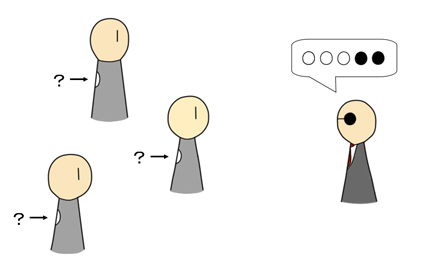
・・・この結果、起きることは何だろうか？
囚人をそれぞれＡ，Ｂ，Ｃとし、一つ一つ思考を追いかけてみようと思う。
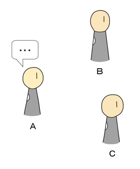
まず、Ａは、ＢとＣの背中が白であるのを見た。そこでＡは次のように考えた。
「もし私が黒であれば、Ｂは白い背中と黒い背中を見ていることになる。」
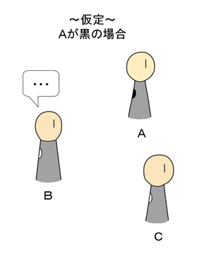
するとＢはこう考えるだろう。「もし私が黒ならば、Ｃは黒い背中を二つ見ていることになる。とすると、Ｃは走り出すはずだ。だって黒は二つしかないのだから。」
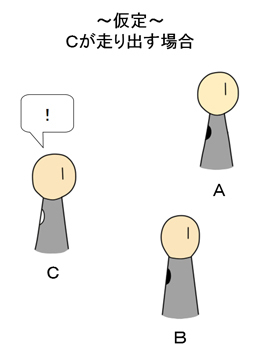
「ところが、Ｃは走り出さない。してみると、私は白なのだ。走りだそう。」
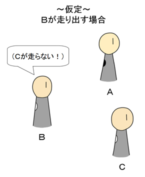
ところが、Ｂは走り出さないではないか。そしてＣも走り出さないではないか。したがって、私が最初に立てた仮定は間違っていたのだ。すなわち私は白なのだ。
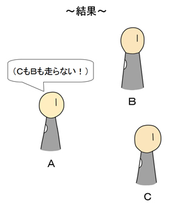
論理構成としては以上なのであるが、その結果として起きたことは、三人のすべての者に、以上の論理構成が生じたために、三人のすべてが同時に走り出したという。これがラカンの設定したオチである。
つまり、他の二人が「自分の色について確信」が持てていない様子を見ることによって、「自分の色」が確信できる という仕組みである。
・「三人の囚人の寓話」の問題点
先の話の筋を要約すると、自分が黒だった場合は、他の二人が自分より早く円盤の色についての確信を持てるはずである。しかし、そうでないため、自分は白だと確信する、ということである。
この時、「他人の色は何であるか」を「推論」することによって、「自分の色」を確信するようになるわけだが、ここで「他者の視点を推論すること」 というのが、ポイントとなる所である。
この話でラカンが問題としているのは、「他者の視点を推論すること」において、「時間」が重要な要素として関わっているということであり、この推論において「他の二人が走り出していないのを見た」という瞬間があるということである。こうした瞬間は「論理の中にあるもの」であり、そこにある「論理の時間」 について、ラカンは言いたかったのである。
それから、この判断を下すには、ある囚人が他の二人よりも早く駆け出す必要がある。なぜなら、他の誰かが駆け出す瞬間を見てしまうと、論理的な判断が不可能になってしまうからである。このような理由から、推論を断言して行為することを、ラカンは「せき立て」 と呼んだ。
・「論理の時間」について
ここで、先の寓話で重要な所は、囚人の一人が行った「推論」の中には「論理の時間」が存在する という所である。
この「論理の時間」は、いわば、「普通の時間」の壁を越えているものであり、「推論」の中で一瞬で通過するような時間だと言えるものである。
ラカンの理論においては、患者の記憶にも「論理の時間」が存在している。 何故なら、ラカンの「鏡像段階論」においては、「他人からこう見える」という推論から、「自分」という自我を形成するから である。従って、ラカンが言うには、「三人の囚人の寓話」において、囚人が自身の色を「白」だと確信するように、我々も自分が「人間」であることを確信するらしい。そして、患者の悩みや欲望といったものも、「他人」を基盤にした推論の所から生じてくるというわけである。
それから、ラカンが言っていたこととしては、「論理の時間」が流れる「推論」の世界には、「人間でないもの」がいて、そこに「主体」もあるという。「主体」はそこから、「他人からこう見える」という推論をすることによって、「自分がこうである」と導きを出すようになり、自分が「人間」であることを確信する・・・というロジックになっている。
・二つの「時間」の方向性
こうしたラカンの「時間」論は、「普通の時間」に対する「論理の時間」という、新しい時間の見方を打ち出すものだと言えると思う。
そして、「論理の時間」は、「人間でないもの（主体）」が持っているもの であり、それから、「象徴界」にある時間 がそれであるということになる。
一方で、「普通の時間」は「想像界」 にあり、これは、普通に「人間と確信したもの（想像的自我）」が持っている時間 ということになる。
ここで、「普通の時間」が「想像界」側にあり、「論理の時間」が「象徴界」側にあるという構図に落とし込むと、その方向性で言えば、これは哲学者の「アンリ・ベルクソン」 が言っていたことや、ヌーソロジーで言われていることと同様だと捉えることができる。
ベルクソンの言った「純粋持続」 という時間も、ラカンの言った「論理の時間」と同様に、「記憶」の中にずっと在り続けているものであり、そこには「過去」と「今」との違いのない時間がある。
ヌーソロジー的には？
ここでは、「論理の時間」＝「純粋持続」とほぼ同義のものとして捉えることにする。そうすると、これは、河合隼雄さん流ユング心理学の「カイロス」の話とも繋がってくるようになる。
ヌーソロジーにおいて、「時間」と「持続」の関係は、『人間の内面』と『人間の外面』の関係にある。端的に言うと、『人間の内面』は普通の「時間」 を持っていて、『人間の外面』は「持続」 を持っている。
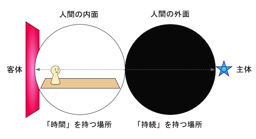
それから、『人間の外面』から先を行った、『奇数系観察子』の世界には「時間が存在しない」ということも言われている。これは、普通の時間ではなく「持続」がメインになっている世界 だということである。また、『ユング精神分析編』で説明した「カイロス」先手の世界 でもある。ラカンが言っていた「人間でないもの」がいる「論理の時間」の世界も、それと同様だと言うことができるわけである。
このように、ラカンの言った「精神分析における論理の時間」の問題は、ヌーソロジーにおいて、「無意識の世界」や『人間の外面』に向かった時に生じる問題にも通じているのである。
■人間の自我構造の発展
・人間の自我形成の仕組み、その１： 空間認識のレベル
ここで、ラカンとは少し脱線して、「ヌーソロジーにおける自我形成の仕組み」 の話をしていくことにする。何故なら、ヌーソロジーにおいて言われている「人間の自我形成の仕組み」は、ラカンの「鏡像段階論」とかなり近いため、合わせて理解しておくと良いからである。それは、基本的には「見られる」 ということをベースにして発展しているものである。
加えて、ヌーソロジーによって明らかになった自我形成の仕組みは、人間の空間認識の仕方と紐付いているものであるため、その内容は、既存の精神分析学には見られないほど、明確で具体的な情報となっていると思う。
ヌーソロジーにおける人間の自我の形成は、『次元観察子』の偶数系（ψ ２、４、６、８・・・）が先手になる ことで行われており、まずは、『次元観察子ψ １〜ψ ８』に対応した「４段階」 で一旦の区切りが存在する。そのため、まずは「段階１〜段階４」から、順を追って説明していくことにする。
１： 空間があるという段階
（※次元観察子ψ １〜ψ ２に対応）
人間の自我の形成は「幼児の空間認識の仕方」から起きているものであり、まず始めにあるのは「空間があるという段階」 である。
この段階では、この世界に産み落とされて、ただ漠然と「空間がある」というのを感じたり「時間がある」というのを感じたりしているだけである。
自我形成はこの時点ではまだ具体的に始まっている段階ではないが、外の空気に触れることで、それが始まるようになるという段階である。
２： 一つのモノがあるという段階
（※次元観察子ψ ３〜ψ ４に対応）
１の段階の次にあるのは、一つの「モノ」を認識するようになる段階 である。それにより、この世界が立体的に出来ているということを、片鱗だけでも感じるようになる。また、自分が「身体」を持っているということを、いくらか分かるようになる。
同様に、誰かの「視線」をこの段階で感じるようになる。「見られるという感覚」がここから始まるようになり、この「見られる感覚」が、ラカンの言う「鏡像」のベースになる。
しかし、この段階では、それぞれの感覚はバラバラに感じているに過ぎないため、統合された「世界像」や、「身体像」を形成するには至っていない状態にある。
３： 無数のモノと、一つの身体があるという段階
（※次元観察子ψ ５〜ψ ６に対応）
２の段階から、段々と無数の「モノ」を認識する ようになってきて、それらが繋がった世界像というのを把握する段階になっていく。同時に、自身の「身体」のイメージも、今までバラバラであったものが統合されて、そこで出来上がることになる。
連続して起きる複数の「視線」から「見られる感覚」が統合されていき、そうして出来上がった「鏡像」の中から、自身の「身体像」ができ上がることになる。
ここで、自身の「身体」をベースにして、「この世界」を立体的に捉えることができる。
４： 無数の身体があるという段階
（※次元観察子ψ ７〜ψ ８に対応）
３の段階では、自分の身体を中心にした空間認識を行うことしかできないが、自分以外の「身体」も意識するようになる ことで、この世界に対する空間認識が深まる段階に入っていく。「この世界に身体を持った人が自分以外にもいるように、自分も身体を持ってここにいる」ということを、無数にいる他人の身体から認識するようになり、他人とのやり取りの中から、今までは漠然としていた「物理法則」の存在も、だんだんと分かってくるようになる。
ここで、自分の身体と他人の身体との相互了解を深めていったり、「自分のペース」と「相手のペース」とを合わせていくことで、物理的な「時間の流れ」 を強く意識するようになる。この段階で時間と空間が一体となった「時空」の認識が完成する ことになる。
・・・と、以上のように、これらの４段階の空間認識の構造が、人間の自我の形成と紐付いているということである。ヌーソロジー的な自我形成は、４段階目で「時空」を完全に認識するようになっているため、そこで一旦、完結となっている。
・人間の自我形成の仕組み、その２： 上位レベル
さて、ここまでは、人間の「空間認識」によって発生する「自我」であったが、この時点では「人間の自我」としてはまだ未完成の状態である。ヌーソロジーの『次元観察子』の構造においては、ここからさらに「人間の自我」へと進化していく構造が、「空間認識」よりも上位のレベルにおいて存在している。
ヌーソロジー的な自我形成の仕組みについては、半田広宣によって解釈されているものもあるが、ここから先あたりになると、筆者（来夢）の独自解釈も少し入り込んでいるので、そういうものとして理解してもらいたい。
５： 言語と情動によって育つ自我
（※次元観察子ψ ９〜ψ １０に対応）
「１〜４」の段階までにある「空間認識」の仕組みの上位には、「言語」と「情動」の働き がある。この中で、特に「言語」の作用によって、人間の空間認識や、自我の形成は、より強固なものとなる。
まず、人間は「言語」を扱うことによって、情報の「記憶」や「記録」をすることができる。そこで、今より前の情報を「過去」として保持することによって、時間感覚が強まるようになってくる。加えて、「言語」を通じてこの世界を捉えることによって、この世界に対する認識が一層深まるようにもなる。
これは、人間の成長の段階でいうと、およそ小学生ぐらいの段階だと言えるだろうと思う。これは「児童期」 とも呼ばれている。小学生ぐらいというと、身体もそれなりに出来上がっていて、「喜怒哀楽」でよく行動する段階であるし、身近にいる人達を通じて色んなことを勉強していく段階であるが、物事を深く考える段階かというと、そこまででもないと言える。人間はここから本格的な自我形成を成し遂げるために、次の段階へと進むことになる。
６： 道徳と性欲によって育つ自我
（※次元観察子ψ １１〜ψ １２に対応）
「５」の段階は「言語」を用いることで自我形成が強固になる段階であったが、その段階では「言語」をまだ表面的にしか捉えていない状態にある。そこで、「言語」の中から、自分の生き方の指針となる「道徳」のようなものを本格的に見出して、そこから自我形成を行う段階が、次に存在する。これを「道徳」と「性欲」による段階 とする。
これは、人間の成長で言うと、恐らく、およそ「思春期」 や「反抗期」 と呼ばれている段階から、「青年期」 にかけてであると思う。それによって社会に対する反抗行為がいくらか出てくることもあり、加えて、それを乗り越えて価値観を形成する時期にも該当する。
この段階になると、表面的な「言語」や、大人が表面的に支持している価値観に囚われず、物事を深く考えるようになる。そこで、世間の「道徳」を自身の自我の在り方と一致させる者もいれば、そこから反抗して、独自で「道徳」を築き上げようとする者もいる。このようにして「大人」としての「人間の自我」が出来上がるようになってくる。さらには、そこに「性欲」が加わることによって「人間の自我」が完成するようになる。
７： 「人間の自我」を超えた精神とコンピューター的な存在
（※次元観察子ψ １３〜ψ １４に対応）
さて、ヌーソロジー的な自我形成の仕組みとしては、「人間の自我」に関して言うならば、以上で説明した「６段階」まであるということになるのだが、さらに視点を広げると「７段階」まである と言うことができる。この「７」 という数は、ヌーソロジーという宇宙論で言われている、全体の階層の数である。
ここで、「６段階目」を超えた精神は「人間の自我」を超えた精神と言えるだろうと思う。あるいは、何かしらのやり方で６までの段階を通過し、その次に進んだ段階が「７つ目」ということになる。この段階は、いくらか謎の多い領域となっているが、そこは「コンピューター」が絡んだ次元 であるという説もある。ひとまず、ここでは、６段階目までの状態を超えた「７段階目がある」ということだけ、述べておこうと思う。
・オンラインゲームとの対応
さて、これまで人間の自我形成の仕組みについて説明してきたが、ここで、「コンピューターゲーム」 と絡めて考えてみると、さらに面白いことが言えるようになる。実は「コンピューターゲームの発展構造」というのも、先ほど説明した「１〜４」の段階の空間認識と、仕組みが一致しているのである。
それは、以下のように対応している。
１： 空間があるという段階
・ゲームの存在は意識しているが、実際にゲームをやっていない状態
２： 一つのモノがあるという段階
・２Ｄゲームをやっている状態、あるいは、３Ｄ静止画を見ている状態
・３Ｄの空間認識を瞬間的に行っていて、３Ｄ空間内に身体はない状態
３： 無数のモノと、一つの身体があるという段階
・３Ｄゲームをやっている状態、あるいは、２Ｄオンラインゲームをやっている状態
・３Ｄの空間認識を連続的に行っていて、３Ｄ空間内に身体がある状態
４： 無数の身体があるという段階
・３Ｄオンラインゲームをやっている状態
・３Ｄ空間内に身体があり、その感覚を他者とも共有している状態
以上のように、コンピューターゲームにおける発展構造を、人間の自我の発展構造にも当てはめて捉えてみると分かりやすいと思う。ゲームにおいて、「３Ｄオンラインゲーム」の段階が限界であるように、人間の自我構造も、その段階が限界だというわけである。
また、こうした発展構造を踏まえて、そこから自分の自我形成を振り返ってみるのも良いと思う。
・「ペルソナ」と「こころ」
以上、人間の自我形成の仕組みにおける「１〜４」までの段階は、ヌーソロジーにおいて『次元観察子ψ １〜ψ ８』にそれぞれ対応しており、そうした中で『偶数系観察子』が先手となる ことで、自我形成が行われているわけである。
さて、ここで、話を「ユング心理学」 とも絡めていくことにするが、「ユング心理学」においては、「ペルソナ」という元型と、「こころ」（または、アニマ・アニムス）という元型は、それぞれ『偶数系観察子』と『奇数系観察子』に対応すると、以前の『ユング精神分析編』にて説明した。
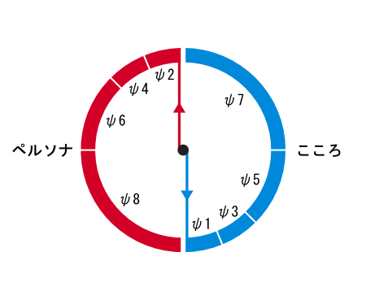
ここで、「ペルソナ」と人間の「自我」は、他者から「見られる」ことを基盤にして形成されているものであり、ほとんど同じものだと言っても良い。
従って、「ペルソナの反対」である「こころ」も、人間の「自我」と同様に、４つの段階を経て発展し、最大７つの段階まであるもの だと解釈することができる。それは、『奇数系観察子』が先手となる ことで発達していくものである。
そして、そのようにしてできるものが、ヌーソロジーで『人間の反対』 と呼ばれているものなのだと思う。
■４次元で読むラカン
・「４次元」で読むとラカンは分かりやすい？
ここで、再度脱線して、今度は「４次元」 の話をしつつ、それとラカンの理論とを絡めていこうと思う。
まず、「４次元」とは何なのだろうか？ 一般的には、単純に「４次元」というと、「４次元時空」 と「４次元空間」 の二つの場合を指すことがある。「４次元時空」とは、「３次元の空間＋１次元の時間」のことであり、早い話が「この世界」のことを言っているのだが、それに対し、「４次元空間」は、「この世界」に対して、新しい空間の軸を一つ加えたという、いわば「この世界にないもの」である（ちなみに、ドラえもんの『４次元ポケット』なんかは、そちら側の「４次元」を指している）。
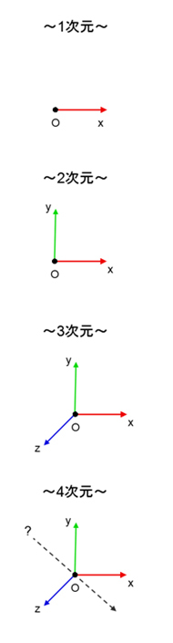
ここで、「４次元」という概念とラカンの理論を絡めて考えてみると面白く、双方を合わせて学ぶことで、理解を深めることが可能である。
・「４次元空間」とは？
まず、一方の「４次元」である「４次元時空」についてであるが、「４次元時空」は、物理学者の「アルベルト・アインシュタイン」によって確立された概念であり、「ミンコフスキー時空」 とも言われている。そちらの話は現代物理学においてよく掘り下げられているため、ここではあまり深く掘り下げる必要はない。
問題は「４次元空間」についてである。「４次元空間」は、現代物理学的には、むしろ「無いもの」という風に扱われている概念である。中には「多次元宇宙論」といったものにおいて出てくることもあるかもしれないが、あくまで抽象的な概念として機能しているため、この世界にあって証明されているものなのかというと、微妙なものなのが「４次元空間」である。しかし、ここでラカンの言うような「人間でないもの」が登場してくる話になると、「４次元空間」との絡みが出てくるのではないか？と思う。
基本的には、「４次元空間」は物理学で証明されたものとして出てくる概念というよりは、「不思議な概念」という風に扱われるものである。物質の世界にそれがあるということが確立されているわけではなく、一般的には、その扱いは推論の域を出ることは無い。しかし、人間の意識の世界においては、そういう「不思議なもの」があるだろうということを前提にして、この話を進めることにする。
そして、この「４次元空間」とは結局の所、何なのだろうか？
筆者の書いた書籍『４次元思想とフラットランド』 には、その辺を詳しく書いたのであるが、ここに書いたことを端的にいうと、「４次元空間」とは、「時間が反転した世界」 だと言うことである。
「この世界」は、物理学において発見された「光速度不変の原理」と、アインシュタインが明らかにした「特殊相対性理論」にて、「物体の速度が光速度に近づくにつれ、時間と空間は相関性を持つようになり、時空が歪むようになる」という「ミンコフスキー時空」であるということが、現代物理学において一般的に言われている。ここで、この「ミンコフスキー時空」の「時間」の部分を「反転」させたもの （具体的には、「虚数」の値を掛けたもの）が、「４次元空間」だと言える・・・というのが筆者の考えである。
以上について、数式などを交えた詳しい仕組みといったことに関しては、書くと長くなるが、筆者の書いた『４次元思想とフラットランド』にて詳しく書いたため、そちらを参照してもらえるとありがたい。
・「４次元空間」側の「シニフィアン（名）」を見る
つまり、「４次元空間」とは「時間が反転した世界」・・・とのことであるが、ここで、「時間の反転」という概念が登場してくるようになる。「時間の反転」については、ヌーソロジーにおいても、実践的な入門の所でキーとなるポイントであるため、重要な所である。
この「時間の反転」について、ヌーソロジーから言えることとしては、それが掴めるようになると、「エルンスト・マッハの絵」のような「視野平面」 が見えるようになる。
これについては先ほども述べたが、こうした哲学は、ラカンの言う「シニフィアン（名）」を知覚することや、「象徴界」や「現実界」に参入することにも通じている。
ここで、「時間の反転」という概念から、ラカンの言う「シニフィアン（名）」と「シニフィエ（イメージ）」の話に繋がるようになるのだが、「４次元空間」が見えている状態というのは、純粋な「知覚」が出来ている状態だとも言えるため、人間はここで「シニフィアン（名）」を知覚することができる。しかし、そこから時間の流れを感じるようになり、意識が「４次元時空」側へとおちいるようになると、「シニフィアン（名）」は「想像的なもの」となり、今度は「シニフィエ（イメージ）」で捉えるようになってしまう。
つまり、ラカンの言ってたことと「４次元」という概念を絡めると、「シニフィアン（名）」は「４次元空間」側 にあって、「シニフィエ（イメージ）」は「４次元時空」側 にあるということになる。
また、「４次元空間」は「象徴的関係」 の場所であり、「４次元時空」は「想像的関係」 の場所だということが言えるようになるため、「４次元空間」内で育っているものが「主体」 であり、「４次元時空」内で育っているものが「想像的自我（客体）」 ということにもなる。
これは、ヌーソロジーで言う所の『人間の外面』 と『人間の内面』 にも対応しているため、以下のような図で表すことができる。
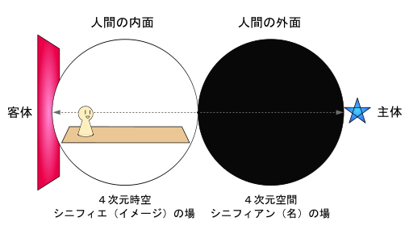
それから、「象徴界」と「主体」のある世界は、ラカン的には「論理の時間」というものが存在している世界であるが、この「論理の時間」は、時間が「反転」したもの であり、「４次元空間」ではそれが機能していると言っても良い。
・仏教の「止観」について
さて、ここで話を「仏教」 とも絡めていこうと思う。
「仏教」には『止観』 と呼ばれる瞑想方法がある。これは、仏教の原典に近い「阿含経」にも書かれていたらしい、由緒正しき行法である。
これが、５７５年頃の中国で、天台宗の創始者である「智顗（ちぎ）」 という人が、「阿含経」にも書かれているその概念に着目し、そこを掘り下げて、「座禅」や「止観」の瞑想方法を『天台小止観』や『摩訶止観』といった講義でまとめることになる。その講義録が構成に残り、「天台宗」や「禅宗」といった宗派で用いられているのである。仏教には、こうした方法論が伝えられて機能している側面がある。
このように伝えられている「止観」とは何なのか？ 簡単に説明すると、「ある一つの対象に意識を集中させ、散乱する心の動きを止める、そして、そのまま対象を観る」 というものである。それは、「ある一つの対象に意識を集中させ、散乱する心の動きを止める。」という行為を指す『止： サマタ』 と、「そのまま対象を観る。」という行為を指す『観： ヴィパッサナー』 の二つの要素で構成されており、それは二つの両輪のように機能しているため、片方が欠けてはいけないものとされている。
ここで、「止： サマタ」という行為は「時間を止める」、あるいは、「時間を反転させる」 という行為に通じていて、「観： ヴィパッサナー」は、そこから「時間の流れを観る」、あるいは、「ただ感じる」 ということに通じていると解釈することができる。つまり、こうした瞑想方法は、「４次元空間」を知覚することにも通じているし、ラカンの言う「現実界」に参入することにも通じているのだと思う。
このように、仏教にあるこうした行法は、いわば「時空の壁」を突破するための手段として働いているのである。それから、仏教の中には、無心になってひたすら「念仏を唱える」ということを支持する一派もいるが、そうしたものも、ラカンを理解するための手段だと言えると思う。
それから、仏教で伝えられている『空（くう）』 という概念と、ラカンの言う『対象ａ』 という概念も、通じていると解釈することができるので、そうしたことを考えてみるのも面白いと思う。
（「対象ａ」については、次の節にて詳しく説明する。）
■「人間の欲望の根本原因」と「対象ａ」について
・「対象ａ」について
さて、話をまたラカンの精神分析に戻そうと思う。
ここで、ラカンが提唱した重要概念である『対象ａ』 について、書いていくことにする。
これは、ラカンがよく言っていたことである「人間の欲望は他者の欲望である」という台詞ともよく絡んでいる概念である。
「対象ａ」とは、まず、簡単に説明すると「人間の欲望の根本的な原因となるもの」 といった意味のものである。しかし、これについてラカンが言おうとしていたことについては、そんなに簡単に説明できるものではない。
ここで、ラカンの講義録である『精神分析の四基本概念』にて、「対象ａ」の記述が出てくる所を引用すると・・・
「対象ａは欲望の中心欠如を象徴化する機能」
「対象ａとは、主体が自らを構成するために手放した器官としてのなにものか」
「対象ａはあるときは主体以前のものであり、あるときは主体の同一化の基礎であり、またあるときは主体によって否定された同一化の基礎」
・・・というように説明されている。
それから、ラカンが言っていた有名な台詞として・・・
「私は君を愛している、しかし、不可解なことに私が君の中に愛しているのは君以上のもの《《対象ａ》》なので、私は君を切り裂く」
・・・というのがある。
このように、色々と難しそうな説明がされているが、「対象ａ」とはそういう概念である。
ラカンの言っていた「対象ａ」は、このように、実体を掴むのがなんとも難しい概念であり、ある時は、「対象ａ」と「黄金数」 とを絡めて説明されることもあった。（これについては、詳しくは『「黄金数」の話』 の項目にて説明する。）
それから、「対象ａ」は、ラカン本人にとっても難解で厄介な概念だったらしく、ラカンが精神分析家として長く活躍している中でも、前期の意味と後期の意味とで違いも出てきているらしい。前期の「対象ａ」は「想像的な対象」 として扱われているが、後期は「現実界を表すもの」 として扱われていたらしい。
この二つの意味については、後ほど分かりやすく整理して説明するとして、確かに、ラカンの研究をしていると、「対象ａ」には、およそ正反対とも言える二つの意味があるということが、ラカン以外の解説者によって書かれている内容からも分かってくるようになる。しかしながら、それらは繋がっているものだということも分かってくる。この節では、その辺について明らかにしようと思う。
次に、ヌーソロジーの概念において、「対象ａ」は何にあたるのだろうか？ ここは重要な所なので次の項目で述べていくことにする。
・「対象ａ」はヌーソロジー的に言うと何か？
「対象ａ」はヌーソロジー的には何が当てはまるのだろうか？ これは大分悩ましい問題であったが、整理することによって、ようやく分かってきた問題である。
ラカンの言う「対象ａ」は、つまり、欲望の根本原因であり、精神分析においては、「患者の求めるナニカ」 といった所である。これは、「分析家の求めるナニカ」 であり、「人間の求めるナニカ」 でもある。
そうした「患者の求めるナニカ」は「患者にとって対立する他者と手に入れたいナニカ」 が絡んでおり、「対立する二つのもの」と、ヌーソロジー的な『等化』が絡んでいる のは間違いないだろうと思う。それは「欲望の原因」として、「根本性欲」 のように働いてもいる・・・そこで、フロイトの「リビドー」の感じにも結びつくのだが・・・これは、精神分析において、なかなか「語ることができないもの」でもあり、後期のラカンにおける「現実界を表すもの」としての「対象ａ」 に該当する。また、ラカンの言っていた「主体以前のもの」にも該当する。
しかし、そうした「現実界」にある「ナニカ」が、人間にとってはヌーソロジー的な『中和』側のものへと倒錯して認識される ようになる。これは、先ほども説明した「シニフィアン（名）」と「シニフィエ（イメージ）」の関係によって生じる問題である。「シニフィエ（イメージ）」になってしまった「ナニカ」は、「想像的関係」でしか捉えることができないものになってしまい、それは本来の関係を阻害するようになってしまう。これは、前期のラカンにおける「想像的な対象」としての「対象ａ」 に該当する。また、ラカンの言っていた「主体の同一化の基礎」にも該当する。
このような意味を持つ「対象ａ」であるが、ヌーソロジー的に、よりそれっぽい言い方をするならば、「対象ａ」は、ヌーソロジー的な『精神』と関係しているもの である。ヌーソロジー的な『精神』とは「対化を等化する力そのもの」であるため、ヌーソロジーで言う「『精神』として機能する対象」が、ラカンの言う「対象ａ」なのではないか？と思う。これが後期ラカンにおける「現実界を表すもの」としての「対象ａ」であり、「対象ａ」の本質的な部分である。「現実界」は、ヌーソロジー的には『人間の外面』を発見することで、その活路を開くことができる。それから、ヌーソロジー的な『精神』とは、恐らく、仏教で言われている「空（くう）」という概念も絡んでいる所なので、そのあたりも関係していると解釈することができる。
しかし、以上はラカンの言った「現実界」における「対象ａ」であるが、人間の世界では、そうした『精神』の力は、ヌーソロジーでは『付帯質』と呼ぶ力へと倒錯する ようになる。『付帯質』の意味は『精神』と逆であり、「対化を中和する力そのもの」である。人間の世界は、ヌーソロジー的には『人間の内面』の意識の中に閉じ込められているため、ラカンの言う「想像的なもの」によって閉ざされている。従って、ここでの「対象ａ」の意味は、前期のラカンのように「想像的な対象」という意味になる。
ここで、『人間の外面』から見えてくる本来の「対象ａ」 と、『人間の内面』に囚われている「対象ａ」 と、二つがあるということを理解すると、ラカンによる「対象ａ」の意味が二種類あるのも納得することができる。「対象ａ」は、ヌーソロジー的には『精神』として機能する場合 と、『付帯質』として機能する場合 の二面性があるものであり、一方の「対象ａ」は『人間の外面』側にあり、『等化』側として機能している。そして、もう一方の「対象ａ」は『人間の内面』側にあり、『中和』側として機能しているということである。
・「まなざし」としての「対象ａ」
以上で説明した「対象ａ」は、ラカンの提唱した「シェーマＬ」を使って説明することもできる。
「シェーマＬ」の図において、「Ｓ（主体）」と「Ａ（大文字の他者）」の線上にあるのが、本来の「対象ａ」であり、それは、「Ｓ（主体）」にとっては「Ａ（大文字の他者）」が持っているものである。しかし、「シェーマＬ」において説明されていたように、ここにある「象徴的関係」は、交差する「想像的関係」によって、阻害されるようになる。
「想像的関係」によって「Ｓ（主体）」が阻害されることにより、今度は「'ａ」と「ａ」の間に、「対象ａ」ができるようになってしまう。それは、「他者のまなざし」となって「鏡像」を作りだし、「想像的自我」を作る上での基盤にもなるものである。ラカンによると、このような「まなざし」もまた、「想像的なもの」としての「対象ａ」だと言われている。
「対象ａ」は他にも、ラカンによって「乳房、糞便、声、まなざし」 といった説明がされているが、これらは、すべて、「想像的なもの」としての「対象ａ」であり、ヌーソロジー的には、『人間の内面』から『付帯質』として機能しているものである。
・「人間の欲望は《他者》の欲望である」
次に、ラカンの言った「人間の欲望は《他者》の欲望である」 という台詞について、掘り下げていこうと思う。これは、欲望の原因のことを言っている台詞なので、「対象ａ」とも密接に関わりあるものである。
まず、重要なこととしては、ラカンがここで《他者》と言っているのは、「シェーマＬ」における「大文字の他者」のことを言っている。
つまり、「Ｓ（主体）」と「Ａ（大文字の他者）」という「象徴的関係」における、「Ｓ（主体）」にとっての「Ａ（大文字の他者）の欲望」 というのが、「人間の欲望は《他者》の欲望である」の本来の意味ということになる。
しかし、先ほども説明した通り、これは、「ａ」と「'ａ」という「想像的関係」に落とし込まれることになる。従って、「他者の欲望」は、ごく普通の「他者の欲望」かのように捉えられてしまう・・・といったことが起きるわけである。
・親鸞の「他力本願」について
さて、話をまた「仏教」へと絡めていこうと思う。これは、「ラカンがこう言った」というより、「ラカンをこう解釈できる」という趣旨の話である。
仏教の宗派の一つに「浄土真宗」 というのがあるが、その浄土真宗の創始者である「親鸞」 について、ここで取り上げることにする。
親鸞は、「法然」を師として「念仏」 で人々を救済する仏教を広めたことで有名だが、それに加えて、「他力本願」 ということの重要性を訴えた人物としても有名である。
親鸞の言う「他力本願」は、あたかも「他人任せ」という風に捉えられかねない言葉であるが、親鸞の言っていた「他力」は、いわば「仏の力」のようなもの のことを言っている。浄土真宗の場合は、「阿弥陀仏」という仏を信仰しているため、「阿弥陀様にお任せする」という意味になる。
そして、ここで親鸞が言っている「他力」も、ラカンの言う「人間の欲望は《他者》の欲望である」にある《他者》と同様に、違う風に捉えられやすい性質を持っているというわけであるが、しかし、親鸞の言いたい意味は違うということである。・・・ここも、絡めて考えると面白いポイントである。
そもそも、ラカンの言っている「《他者》の欲望」と言ったものも、親鸞の言いたい「仏の求めているもの」 に例えると、しっくり来るのである。親鸞の仏教における「人」と「仏」の関係において、「人」にとっての「仏」は「他者」であるし、同様に「仏」にとっての「人」も「他者」である。この関係において両者が「求めているもの」が、ラカンの「対象ａ」にも近いのかもしれない。しかし、こうした「人」と「仏」の関係が、得てして、「宗教化」や「言語化」がされていく中で、間違った方向に行くこともあるわけである。
それから、親鸞の仏教が持つ「念仏」という手段もまた、特殊なものである。念仏には、一般的な言語の持つ意味は、さほど大事ではなく、どちらかというと、音の響きそのものが持つ力 が実は重要である。そこで、まかり間違うと、言語的な意味が重要視されることもあるかもしれないが、本来であれば、音の響きが持つ「言霊」 の持つ力の方が大事なのが「念仏」というものだと思う。
法然や親鸞の使っていた念仏は、「南無阿弥陀仏（ナムアミダブツ）」 である。これは、「阿弥陀仏様にすべてお任せします。」というような意味を持っているが、そうした意味よりも、その言霊からダイレクトに伝わる「感じ」の方が重要なものなのである。これは、ラカン的にはどういうことかというと、「シニフィアン（名）」を普通に「言語」として扱わないということであり、「言語」を通して「シニフィエ（イメージ）」を伝えることをしないということである。つまり、「シニフィエ（イメージ）」を介すことなく、「シニフィアン（名）」が持っている力をそのまま伝えるということである。従って、こうした仏教で編み出された手法は、ラカン的にも理に適っていたというわけである。
このように、親鸞の仏教の話は一例であるが、ラカンの話に通じているものを、他の事例で探してみると面白いと思う。
・「黄金数」の話
さて、ラカンの「対象ａ」は、「黄金数」 として説明されたこともあったということを先ほど述べたが、ここで、それについて詳しく説明していくことにする。
まず「黄金数」とは何か？ それは、数学で出てくる無理数の一種であるが、以下の数値のことを言っている。
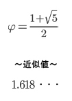
これを「比率」として使った場合、「１： １．６１８・・・」という比率が「黄金比」 である。黄金比については数学においても有名であり、以下のような形として使われていることはよく知られている。
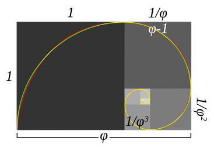
その他、黄金比は自然界に存在する割合としてもよく知られているため、それに関しては、興味を持った人は調べて欲しい所である。
さて、このように数学の中では非常に有名な数である「黄金数」であるが、ラカンによると、「自己と他者の関係」からも、以上の値を導くことができて、これが「対象ａ」を表している と言う。
まず、「自分」 を「ｘ」 ということにする。加えて「他人」 を「ｙ」 ということにする。そうすると、「自分がいて他人がいる」ということは、次のように表すことができる。
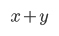
次に、ラカンは、「自分と他人がいる中で、自分がいる」というのを、次のような分数で表した。ここで分母にくるのが「自分と他人がいる」であり、分子にくるのが「自分がいる」ということである。
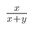
それから・・・この次が難儀な所なのであるが、先の式は「全体（自分＋他人）にとっての自分」を表しているものだが、それは、自分が本来見ることのできない光景である。そのため、ここで「自分が他人をどのように見ているのか」から、「全体にとっての自分」が浮かぶようにする。
・・・要するに、「全体にとっての私」と「私が他人をどのように見ているのか」が一致した場合、次のようになる。
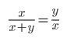
そして、以上の全てを「ａ」 とイコールとする。
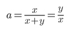
この方程式から、「ｙ」＝「ａｘ」を求めることができる。ここからさらに得られる式が・・・
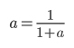
・・・であり、さらにこれを解くと・・・
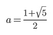
以上の通りになる。ここでラカンの言うように「黄金数」が出てくることになる。
このように導かれる「黄金数」という数値だが、この中で「全体にとっての私」と「私が他人をどのように見ているのか」がイコールとなる・・・という所が、少し突拍子もない所になっているような気がする。この点に関しては、ヌーソロジー的に解釈してみるとどうなるのだろうか？
ヌーソロジー的には、こうしたものを「同じとして見ることができる前提がある」というのは、ヌーソロジーで言うと『等化』に通じている所がある。ヌーソロジーで言われている『等化』というのは、一見、相反する性質を持つ異なるものでも「対称性のもとに繋がりがある。」というような意味がある。特に「人間の意識」においては、そうした「位置」があるというのが、ヌーソロジーの世界観である。
ラカンの話もまた、このように、人間の意識は「円環構造」 をしているというような原理が前提となっていると解釈できるため、その辺りはヌーソロジー的な世界観とも一致しているということになる。
・メビウス構造
ラカンは、「メビウスの輪」や「クラインの壷」といった「表裏の区別も持たない」構造を好む心理学者であり、中には、「トポロジー」の話が出てくることもある。これは先ほども述べたが、ラカンは、人間の意識の中にある「円環構造」の仕組みに着目しており、相反するものが表裏一体となっているような、シュールなものを好む心理学者のようであった。一時期、シュルレアリスム運動にも近づいていたことから、そうした考え方をうかがうことができる。
ラカンの理論とヌーソロジーから言えることとしては、普通の人間が囚われているような『人間の内面』という意識の中では、本来の「対象ａ」を満たすような『等化』に向かうことができない。ラカン的には、それを表現するために必要だったのが、「メビウスの輪」のような構造だったというわけである。
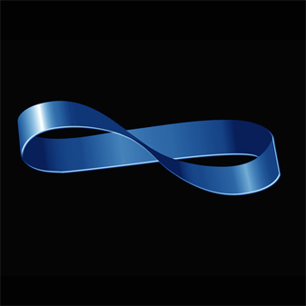
こうした「メビウスの輪」のような構造は、ヌーソロジー的には「反転」という概念を連想するものでもある。やはり、ラカンが訴えたかった、世の中の持つ「閉塞感」を脱し、人間の持つ「欲望の根本的原因となるもの」を明らかにするためには、そうした概念が必要だったというわけである。
■「父の名」や「ファルス」について
・ラカンによる「オイディプス・コンプレックス」解釈
ラカンは、フロイトの影響を受けて「パリ・フロイト派」を立ち上げた人物であるが、フロイトは「オイディプス・コンプレックス」 というものについて提唱したことで有名である。この「オイディプス・コンプレックス」については、後の『オイディプス編』 の所で詳しく説明するが、簡単に言うと、それは「父」と「母」と「子」を巡る物語 から生まれるものである。
フロイトが言うには、最初、子供にとって「母」は唯一の性的な対象である。しかし、その「子」と「母」の関係の中に「父」が入り込み、その関係を邪魔する障害物となる。そうした絶対的な強者である「父」との関係による葛藤から生まれるもの・・・というのが、大まかな「オイディプス・コンプレックス」の内容である。
そして、ラカンは、フロイトに続いて「オイディプス・コンプレックス」について言及し、そこで「ファルス」や「父の名」といった独自の概念を提唱しながらも、独自路線でこれを掘り下げていった。
この節では、そのことについて説明していく。
・「ファルス」について
まず、ラカン的な「オイディプス・コンプレックス」の解釈 では、「母」と「子」の関係が形作られていく中に、加えて『ファルス』 という概念が出てくる。
この「ファルス」というものは・・・「男根」・・・もとい、「ペニス」（それも勃起したもの）で表されるものであり、ラカンはこれを「母親の欲望を満足させる、想像的なもの」 という概念として扱っている。
（ちなみに、ペニスは男の子しか持っていないものであるが、ラカン的には、女の子の場合でも想像上のペニスを持っているものとして、ここでは扱われる。）
ラカンが言うには、まず、「母」は、欲望の対象として「ファルス」というものを持っている。そこで、「子」は「ファルス」になりきろうとし、「ファルス」と「同一化」をする。あるいは、「母」が「子」を「ファルス」の場所に置くことで、「子」は受動的に「ファルス」と「同一化」されるようになる。
しかし、「ファルス」は、実は「母」の欲望の対象の実体ではなく、「想像的なもの」 として表れている、いわば、仮の姿をしたものである。真に「母」の欲望の対象となるものは、本来は実体のないものである。それは、「象徴的なもの」 であり、「現実界」のように実体が掴めないものである。そこで、「想像的なもの」として、代理の「表象」として表れているのが「ファルス」である。従って、「ファルス」と同一化した「子」は、「母」と「想像的な関係」を築くようになるが、それは本来の欲望を満たすものではない。そこで、「子」はこの関係に対して、いくらか空虚さを感じるようになる。
ここで、「シニフィアン（名）」と「シニフィエ（イメージ）」の話のように、「言語」の問題がまた絡んでくるようになるが、「母」の本来の欲望は「シニフィアン（名）」のような存在としてあるものだが、言語活動を通じて「母」と「子」の関係を築いているうちに、それは「想像的関係」へと落とし込まれてしまうようになる。そうした中で「子」は、「言語」で表せないものに対して空虚さを抱くようにもなる。これと同様のことが「ファルス」においても起きているというわけである。
「子」が「母」との関係において、いくらか空虚さを感じている中で、その次に「父」 という存在が出てくることになる。そこから先の内容については、次の『「去勢」について』 の項目にて説明していくことにする。
ヌーソロジー的には？
ヌーソロジー的には「ファルス」とは何にあたるのだろうか？
それよりも、まず、こうした問題は、実際の「性」の問題として捉えたり、実際の「両親」としての「母」や「父」という風に捉えたりするよりも、もっと概念的なものとして捉えた方が良い。
ここで、「子」と呼んだものにしても、「男の子」のことなのか、「女の子」のことなのかに違いがあるし、それから、どんな両親から生まれるかという点についても、各個人で違いがある問題である。しかし、「母」を「地球」 として、そこから生まれる「子」を「人間」 とした場合、それはどのケースでも当てはまるということになる。「母の欲望の対象」は、いわば、「地球という存在の欲望の対象」 ということになるかもしれない。一方で、「父」は「社会」 という風に置き換えると良いかもしれない。そちらのイメージの方がしっくり来るのであれば、そちらの方が良いのだと思う。
そして、それが「両親」と「子」の関係においても、同様のモデルとして表れている・・・という所が、重要なのである。
さて、ここまでの「ファルス」の話を整理すると、「対象ａ」の時の話とそう変わらないことが分かってくる。
「母」の本来の欲望の対象を「Ｘ」 とし、幼児の原初の状態は「原始のモノ」 として、簡単に「シェーマＬ」の図に当てて考えてみる。
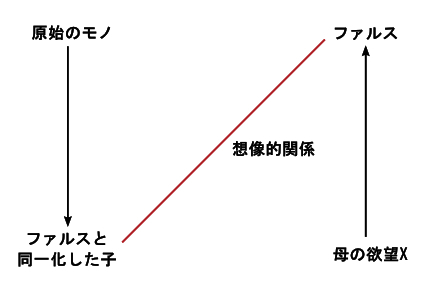
以上の図の「原始のモノ」と「母の欲望Ｘ」は、ここでは「潜在的なもの」として表に出ていない状態にある。そこで、「ファルス」同士の関係が常に築かれている状態である。
これは、それぞれ「原始のもの」に「シニフィアン（名）」を置いて、「ファルスと同一化した子」に「シニフィエ（イメージ）」を置いた場合の関係と同様であり、方向性としては、本来の「母の欲望Ｘ」は、「対象ａ」と同様に、ヌーソロジー的には『精神』の方向性を持っている。
しかし、「想像的関係」としての関係を持っている「ファルス」同士は、『付帯質』の方向性を持っているということになる。本来の欲望の代理の「表象」として表れている「ファルス」は、『付帯質』にかなり近いものとして解釈しても良いと思う。
あとは、恐らく、「ファルス」とは『感性』の持つ『ノス（ＮＯＳ）』的な力が発揮された時に出てくるものかもしれない？と思う。それは『人間の感性』か『ヒトの感性』かまでは、自分にはハッキリ分からない。しかし、それは『感性』の深淵にあるもの と言っても良いかもしれない。「ファルス」とは、そこにある「深淵の情動」が表象化したものに対して、ラカンが名付けたものなのではないか？と思う。
・「去勢」について
次に、「父」 が出てくる時の話である。
「ファルス」と同一化した「子」は、「母」との「想像的な関係」に空虚さを感じるようになるが、そこに「父」が登場することになる。
ここで、「父」の役割として行われるのは、「母」の「ファルス」を取り上げて「子」と「母」の「想像的関係」を断ち切ること である。そして、別の方法をもってして「母」を新たな欲望の対象に向けることである。これによって、「母」の欲望は「子」とは別のものとなり、「子」は「母」の「ファルス」ではなくなってしまう。
このように「母」から「ファルス」を取り上げることによって、必然的に「子」の「ファルス」まで無くなる ことを、ラカンは『去勢』 と呼んだ。
幼児は、この「去勢」に対して、一種の恐怖を感じるようになる。なぜなら、「ファルス」は、その実体を掴もうとしても掴めないという空虚な存在であるという一方で、「ファルス」を持ち続けることで「万能感」 を維持することもできるからである。
「母」の「ファルス」として振る舞うということは、幼児的な「万能感」が発揮されている状態でいるということでもあり、そこには一種の「心地よさ」のようなものがある。しかし、「父」が登場するとなると、「それが取られるぞ」という恐怖が出てくるようになる。これを「去勢脅迫」 と言う。
しかし、「子」はこうした「去勢脅迫」を乗り越えて、持っていた「ファルス」が無くなった先に、また新たな欲望の対象に向かうことになる。
その内容は、次の『「父の名」について』の項目にて説明していくことにする。
ヌーソロジー的には？
「去勢」について、ヌーソロジー的に言えることを軽く説明する。
簡単に言うと、先ほど「シェーマＬ」で表した図において、「想像的関係」と交差する軸が新たに出来上がる ということである。
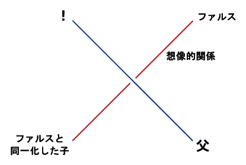
「想像的関係」は、一種の『ノス（ＮＯＳ）』的な関係であり、『付帯質』の方向性を持つものである。それが破られるということは、「嘘が暴かれる」ような恐怖に近いため、「去勢脅迫」もそれに近いものと言っても良いと思う。
そして、話の本題は、次の『「父の名」について』 である。
・「父の名」について
「父」の登場と「去勢」によって「ファルス」を失った「子」が次に向かうのは、「父」という存在である。
「子」は「父」に対して、「去勢」をもたらした存在として恨みつつも、「父」は「ファルス（男根）」を保持している存在でもある ため、今度は、その「ファルス」に憧れを抱くようになる。そして、「父」を自分の理想像としてしたて上げて、それと同一化することによって、欲望の問題を解消するようになる。
（以上のように、「父」と同一化しようとするのは男の子の場合であるが、女の子の場合は、これとは違った構造の中で「ファルス」や「父」と関わることになる。しかし、これについて説明すると話が難しくなるため、ここでは省くことにする。）
ここで、今度は「父」の持つものを新たな欲望の対象とする「子」だが、この「父」が持っている「ファルス」は、「象徴的なもの」として機能する「象徴的なファルス」 である。これは、「母」との関係によって築いていた「想像的なファルス」とは違って、空虚さをともなわないものである。
そして、この「父」の場に来る「象徴的なもの」として機能するもの を、ラカンは「父の名」 と呼んだ。これは、「父」と「子」の「象徴的関係」を強くする機能を持ち、「主体の欲望を正常化する機能を持つもの」とも言われている。
ラカンによると、精神病においては、この「父の名」が排除されていると言う。ラカンが言うには、「父の名」は、「主体の欲望を正常化する機能をもつもの」であるわけだが、精神病患者においては、それが、始めから「無いもの」かのようになっている・・・とのことである。
ヌーソロジー的には？
ここで言う「父」も「実際の父親」というよりかは、概念的なものとして捉えると良い。それは「象徴的な機能」を持つ「言語」 に近い存在である。
ここで、ヌーソロジーの概念と「父の名」とを絡めて「シェーマＬ」に当てはめてみると、以下のようになるのではないか？と思う。
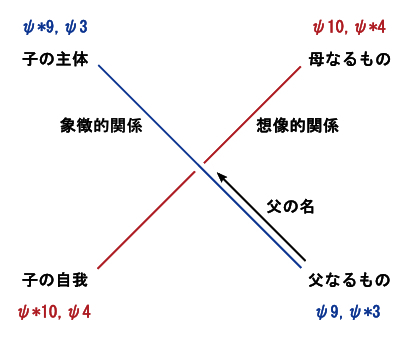
左側に「子の主体」と「子の自我」がある。「子の主体」は、「子」が本来持っている「象徴的なもの」であり、「子の自我」は、母親との関係を築くことによってできた「芽生えかけている自我」である。ここにはそれぞれ、「ψ *９，ψ ３」 と「ψ *１０，ψ ４」 を置いた。その子自身の「主体」と「自我」の精神は、始めのうちはまだハッキリとは定まってはいない状態にあるが、「見る・見られる」の関係の中で過ごすことによって、それがハッキリしてくるようになる。
続いて、右側の「母」に「ψ １０，ψ *４」 を置き、「父」に「ψ ９，ψ *３」 を置いた。そして、「父」から発せられる「命令」を「父の名」 とした。それは、「想像的な関係」を築く「母」と「子」を分断し、「象徴的な関係」を築くように働きかけるものである。ヌーソロジー的に見ても「父の名」は『次元観察子ψ ９（人間の思形）』の持つ機能 に該当すると見ても良いだろうと思う。
これまで、「ファルス」があった頃は、「想像的関係」の中でしか自分を位置づけることができなかったが、ここで、「父の名」によって、新たに「象徴的関係」を見出すことができるようになった・・・ということになる。
ラカンは「父の名」という概念について、人間の「主体」を明らかにする役割を持った、いわば肯定的なものとして扱っていたと言っても良いと思う。「父の名」の持つ機能は、ドゥルーズなどの哲学と絡めて言うならば、「差異」 の機能に近い。
しかし、「父の名」によって「子」の欲望は法で縛られるようになり、そこから「子」が「父」に向かうようになるということは、「父権的なもの」に向かうことにも繋がってくることである。それは、いわば「強い父親」に向かうような方向性になり、そこでまた新たな問題の発生の原因になるとも言えるのではないか？と思う。
また、ここでは「象徴的なもの」として機能している「父の名」だが、ここでまた新たに「シニフィアン（名）」と「シニフィエ（イメージ）」の問題が絡み、「言語化」によって「想像的なもの」に落とし込まれてしまう・・・という展開も考えられる。
ヌーソロジー的にも、『次元観察子ψ ９（人間の思形）』は、元々は『ノウス』側であるが、人間にとっては『反定質』・・・つまり、『中和』側として機能するようになる。
逆に、その問題におちいってしまった時は、「ファルス」だった時の「自分」への回帰・・・もっとも「想像的なもの」としての「ファルス」ではなく、本来の「母の欲望」（それは「地球が求めているもの」と言っても良いかもしれない。）を目覚めさせる必要があるのではないだろうか？と思う。
以上、ラカンの言う「父」と「母」と「子」と、「ファルス」と「父の名」の関係については、もっと掘り下げることもできるかもしれないが、ひとまず、ここまでにしておこうと思う。
■これまでの用語まとめ
これまでに述べたラカンの用語と、ヌーソロジー用語との対応をまとめると、以下のようになる。
〜基本関連〜
---『鏡像段階論』---
幼児は元々、自分の身体像を持っていないが、
他者からの視線や、そこから作られる「鏡像」から、
自分の身体像や自我を形成していくという理論。
ヌーソロジー的には、「見られる」という意識と、
『次元観察子ψ ４』によって「客体」が形成されて、
人間の自我が生まれるという理論と繋がる。
---『想像界』---
「想像的自我」が形成される場。
映画「マトリックス」だと、仮想世界マトリックスに対応する。
ヌーソロジー的にはψ ４と関係あり。『人間の内面』は想像界の入り口と言える。
突き詰めると『人間の感性（ψ １０）』に対応する。
---『象徴界』---
「名」や「言葉」のある場であり、それらのネットワークが作る場。
映画「マトリックス」だと、マトリックス上のソースコードに対応する。
ヌーソロジー的にはψ ３と関係あり。『人間の外面』は象徴界の入り口と言える。
突き詰めると『人間の思形（ψ ９）』に対応する。
---『現実界』---
「想像界」からは捉えることができない、
「本当の現実」や「主体の本体」がある場。
映画「マトリックス」だと、マトリックスから目覚めた現実世界に対応する。
ヌーソロジー的には『位置の交換』が起きた時の世界が「現実界」の入り口と言える。
突き詰めると『次元観察子ψ ９〜ψ １０』の先にある世界に対応する。
---『論理の時間』---
「三人の囚人」の逸話において出てくる、
「他人から見た自分を論理的に推測する」中で流れている時間。
「人間でないもの」が持っているものでもある。
ベルクソンの「持続」とほぼ同義として扱うことができ、
『人間の外面』や『奇数系観察子』にあるものだと解釈することができる。
---『対象ａ』---
簡単に説明すると「人間の欲望の根本的な原因となるもの」だが、
その扱いは書物によって異なるため、非常に難解な概念。
「想像的な対象」として扱われる場合と、「現実界を表すもの」として扱われる場合がある。
本来の「対象ａ」は「現実界を表すもの」であり、
対化を『等化』する『精神』と関係があるが、
人間の世界においてはそれが逆側へと倒錯し、
対化を『中和』する『付帯質』として機能するようになる。
これが「想像的な対象」としての「対象ａ」となる。
「乳房、糞便、声、まなざし」によって説明される「対象ａ」は、
『付帯質』として機能する「対象ａ」にあたる。
〜シェーマＬ関連〜
---『シニフィアン（名）』---
記号表現、能記、象徴、名。
「象徴界」にあるもの。
ヌーソロジー的には『次元観察子ψ ３』や「主体」に付随しているもの。
「シニフィアン（名）」同士が『ψ ９（思形）』を作る関係になる。
言葉の伝達においては「ψ *４→ψ ３」という仕組みがあり、
ψ ３に「シニフィアン（名）」がある。
---『シニフィエ（イメージ）』---
記号内容、所記、概念、イメージ。
「想像界」にあるもの。
ヌーソロジー的には『次元観察子ψ ４』や「客体」に付随しているもの。
「シニフィエ（イメージ）」同士が『ψ １０（感性）』を作る関係になる。
言葉の伝達においては「ψ *４→ψ ３」という仕組みがあり、
ψ *４に「シニフィエ（イメージ）」がある。
---『Ｓ、主体（エス）』---
幼児が「想像的自我」を形成する前からすでに持っていた、原始的なもの。
ヌーソロジー的にはψ ３に対応する。自己の「主体」。
---『Ａ、大文字の他者』---
主体（エス）と同じく、他者が持っている原始的なもの。
ヌーソロジー的にはψ *３に対応する。他者の「主体」。
---『'ａ、想像的自我』---
「鏡像段階論」によって形成される自我。
ヌーソロジー的にはψ ４に対応する。自己の「客体」。
---『ａ、他者（小文字の他者）』---
肉体を持ってごく普通に見えるものとしての「他者」。
ヌーソロジー的にはψ *４に対応する。他者の「客体」。
---『象徴的関係』---
「主体（エス）」と「大文字の他者」、
ψ ３とψ *３を繋ぐ関係。
---『想像的関係』---
「想像的自我」と「他者（小文字の他者）」、
ψ ４とψ *４を繋ぐ関係。
〜「父の名」や「ファルス」関連〜
---『ファルス』---
ペニス（それも勃起したもの）で表わされる概念。
母親の欲望を満足させる、想像的なもの。
人間が本来持つべき欲望とは異なり、仮の姿として機能しているもの。
「子」は「母」の「ファルス」と同一化することにより、
幼児的な万能感を得るが、
それは仮の姿であるため、本来の欲望が満たされることはない。
原初の「母」と「子」の関係からできるものであり、
『感性』の『ノス』的側面と解釈することができる。
---『想像的なもの』---
想像界にあるものであり、『ノス』側のもの。
---『去勢』---
「父」の登場によって、
「母」から「ファルス」が取り上げられ、
「子」の「ファルス」もちょん切られること。
これによって「子」は「象徴的なもの」に向かうようになり、
「母」と「子」の「想像的関係」が切られて、
新たに「父」との「象徴的関係」が作られるようになる。
ヌーソロジー的には、『感性』の世界に没頭することを諦め、
『思形』の世界と交差することに該当する。
---『象徴的なもの』---
象徴界にあるものであり、『ノウス』側のもの。
---『父の名』---
「父」が持っている「象徴的なもの」として機能するもの。
「父」と「子」の「象徴的関係」を強くする機能を持つ。
『思形』のノウス的側面であり、
「言語」が作る具体的な作用と解釈することができる。
---『父の名の排除』---
精神病患者によく見られる、
「父の名」が始めから「無いもの」かのように扱われている現象。
「父の名」は「主体の欲望を正常化する機能を持つもの」として働くため、
それが無くなると、精神病のような状態になる。
人間の世界において、『思形』は『反定質』の力を作り出すため、
『反定質』に対する拒絶から起きるものと解釈できる。
参考文献
・『ジャック・ラカン 精神分析の四基本概念』(2000)： ジャック ラカン (著), ジャック=アラン ミレール (編集), Jacques Lacan (原著), & ５ その他： 岩波書店
・『ラカンの精神分析』(1995)： 新宮 一成 (著)： 講談社
・『ラカン入門 (ちくま学芸文庫)』(2016)： 向井 雅明 (著)： 筑摩書房
・『生き延びるためのラカン』(2012)： 斎藤 環 (著)： 筑摩書房
・『ラカン (FOR BEGINNERSシリーズ)』(1997)： ダリアン リーダー (著), ジュディ グローブス (イラスト), Darian Leader (原著), & ２ その他： 現代書館; 〔イラスト版〕版
・『現代語訳天台小止観』(1978)： 関口 真大 (翻訳) , 智顗： 大東出版社
・『「止観」の源流としての阿含仏教---天台智者大師の二つの謎をめぐって 北京大学講演録』(1998)： 桐山 靖雄 (著)： 平河出版社
・『あなたの知らない親鸞と浄土真宗 (歴史新書)』(2013)： 山折 哲雄 (監修)： 洋泉社
・『新装版 四次元の世界---超空間から相対性理論へ (ブルーバックス)』(2002)： 都筑 卓司 (著)： 講談社; 新装版
・『2013:シリウス革命---精神世界、ニューサイエンスを超えた21 世紀の宇宙論(コスモロジー)』(1999)： 半田 広宣 (著)： たま出版; 初版
・『2013:人類が神を見る日 アドバンスト・エディション (超知ライブラリー サイエンス)』(2008)： 半田 広宣 (著)： 徳間書店; 再版
筆者ブログ
哲学思考のなれのはて：
http://tetugａkunａrehａte.cocolog-nifty.com/
ＭＡＩＬ
tongpoo12yo@gmａil.com
●本書に関するご感想などをお待ちしております。